PIC CHIP · MY HANDS-ON REPORT · 2026-11-01
從光場到 PIC Chip 以我自己作為學員，整理從環境、元件物理與光邏輯，到七顆 MZI 晶片版圖、規則修正、路徑回註、封裝重播及獨立幾何檢查的完整過程。
實作者／紀錄者：Codex（以學員身分） · 整理日期 2026-11-01，Asia/Taipei
M0～M3 · 17 步 單顆 B7 · 7 MZI · 14 相位 實體功能／製程資格待建立 80 → 53 → 80 理想 → 原相位線長回註 → 模型補償
2 → 0 原始全套 pre-DRC：標籤修改前後
2 × 400 兩輪乾淨來源重建的模型比較
6 / 54 獨立幾何量測／規則判讀比較
我的工作位置： C:\EDA_Codex\Lab06b；D 槽唯讀。我的產物： PIC 設計資料、GDS、模型、接口表與可追溯結果。尚未進行流片／實體量測；本文不把理想或教學模型的通過當成實體晶片資格。
我的實作主線 我把問題分成四層：先看懂場與功率，接著讓同一個 B7 在固定光路下切換功能，再把規格落成幾何，最後檢查另一個目錄、另一套幾何引擎能否重現相同結論。每次出現不一致，我保留失敗結果與修正證據。
M0 工具／物理 → M1 光場／邏輯 → M2 版圖／交付 → M3 重建／交叉檢查
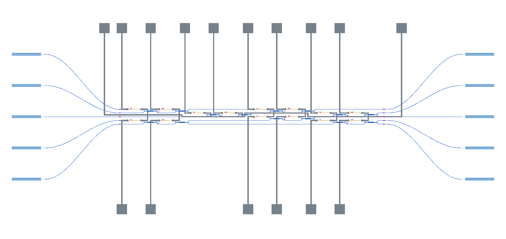
我的最終設計｜KLayout 原生 GDS 視圖。這是設計幾何，並非已製造晶片照片；S7、M3 沿用 S6 採用版。 我的最終結果總表 M0｜我先建立工具、物理與共同模型 先學會辨認場、功率與幾何證據，再讓同一套模型支撐後續設計。
M0 S1 · 我的實作紀錄
工具鏈、MZI 版圖與故障注入 我做了什麼，得到什麼結論 我先確認正式工作位置與 Python／PDK／KLayout 的實際路徑，再建立帶 heater 的單顆 MZI 測試件，回讀正常版與故障版 GDS。
我保留正常版零標記與 F1～F8 故障注入的實際命中，學到「工具能啟動」和「檢查器能抓錯」要分開證明。這時我完成的是測試件，還不是七顆 MZI 的 B7。
原始執行紀錄：2026-10-31T10:20:00.583743+08:00 · 本步原始證據 · 分頁閱讀
本步問題： 能否在自己的專案目錄，從工具設定開始，實際做出一顆可開啟、可檢查的 MZI 測試件？
1．根目錄與工具設定 所有我的操作從 C:\EDA_Codex\Lab06b 開始，EDA_paths.json 與教材同根目錄。IPKISS 與 PDK 使用原生安裝路徑，KLayout 放本專案 tools/KLayout。程式不借用其他課程的設定根目錄。
C:\EDA_Codex\Lab06b\
├─ Lab06b_index.html # 整份可讀報告入口
├─ EDA_paths.json # 本專案工具位置設定
├─ course\ # 每步教材、完整規劃、版圖圖片
├─ analysis\ # Lab01a 7.6 完整圖文分析
├─ assets\ # 共用樣式、五張原始場圖
├─ config\ # B7 規格、步驟定義
├─ scripts\ # 一鍵執行 M0 S1、由證據產生報告
├─ work\common\ # PDK、GDS、DRC 共用程式與 deck
├─ work\m0_s1\out\ # 本輪 GDS、DRC、工具鏈 JSON 與 log
├─ tools\KLayout\ # 本專案可攜式工具
├─ evidence\ # 理想模型、場圖數值、驗證、來源雜湊
├─ learner\ # 學員記錄與作答
├─ results\ / delivery\ # 後續 B7 模擬／Chip／交付成果
├─ reference\ / sources\ # 舊教材閱讀版、原始封存與 NPZ
├─ history\ # 更新前備份與變更紀錄
└─ C01\ # 原課程，保持原位2．先預測再操作 若正常版 MZI 外框內有兩個 heater，應看到幾個 MMI、哪幾個光學埠？ 波導太窄、金屬太近及圖形超出外框，分別應由哪一種檢查抓到？ 正常版沒有違規，是否足以證明檢查器真的有作用？請用故障注入回答。 3．我實際執行 Set-Location -LiteralPath 'C:\EDA_Codex\Lab06b'
& .\scripts\run_m0_s1.ps1若 PowerShell 阻擋腳本，使用實際 Python 執行以下命令；不需要變更整部電腦的執行原則：
$cfg = Get-Content -LiteralPath '.\EDA_paths.json' -Raw | ConvertFrom-Json
$pythonExe = $cfg.windows.ipkiss_python
& $pythonExe scripts/smoke_mzi.py
& $pythonExe work/m0_s1/build_mzi_drc.py
& $pythonExe work/m0_s1/check_toolchain.py
& $pythonExe scripts/render_course.py先跑 理想 MZI 五個案例 ；再用 PDK 建正常與故障版 GDS、回讀外框、執行 DRC，最後從本輪 JSON 更新頁面。這一顆是 MZI 測試件，尚不是七顆 MZI 組成的 B7 Chip。
4．本輪工具鏈結果 時間：2026-10-31T10:20:00.583743+08:00；核心工具鏈通過。每個結果均來自本輪輸出。
5．實際版圖與故障注入 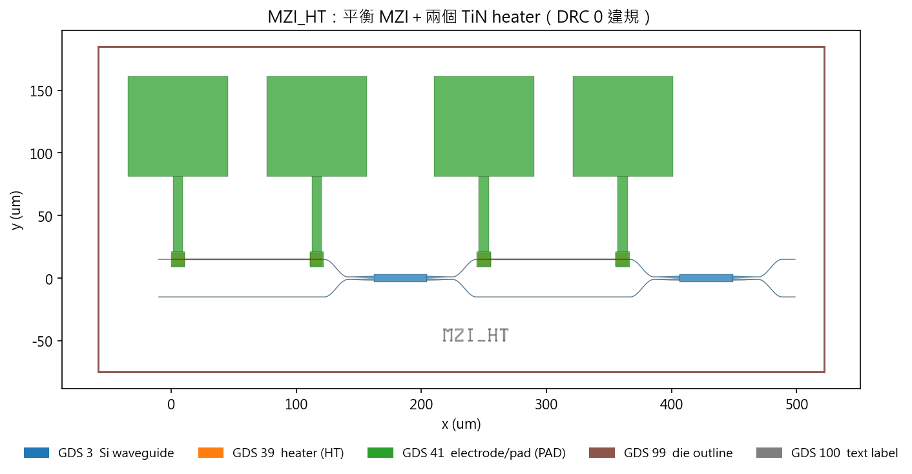
圖 1｜本輪重新產生的 MZI_HT；總長 509.0 µm。MMI 間上／下臂長依序為 172.566／172.566 µm。 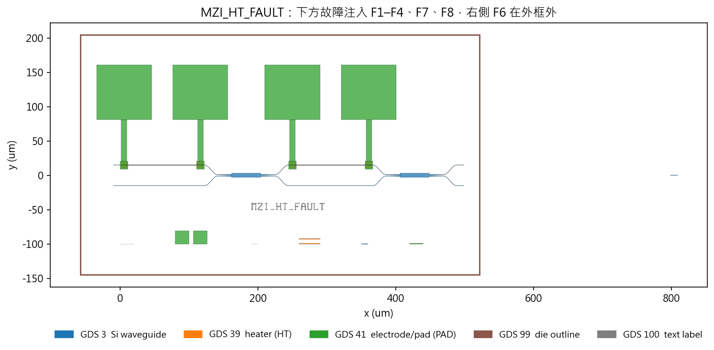
圖 2｜MZI_HT_FAULT，F1–F4、F7–F8 為刻意違規幾何；F5 檢查宣告設計區與外框差異；F6 檢查外框外圖形。 理想 MZI 補充與 Lab01a 場圖採「in1／out1 在下、in2／out2 在上」；本測試件外部埠採 0 起算。比較結果時先核對物理上下位置，再比埠名。基礎理想模型沒有包含本版圖的傳播相位與損耗。
正常版 DRC：0 個標記；外框外圖形 0 個。故障版各規則須有實際命中，不能只看正常版為 CLEAN。此 deck 是製程前檢查，製造平台仍會做正式 DRC。
6．對照 Lab01a §7.6 完整分析頁 附五張原圖、三份原始 NPZ 的衍生數值。請分清理想矩陣的能量守恆、場模擬的 flux，以及 GDS 的幾何檢查：三者回答不同問題。切換態以原始值算出的 ER 約 25.0 dB，合光態約 26.15 dB；沒有重跑 FDTD。
8．程式、證據與下一步 版圖與故障注入程式 · 工具鏈檢查 · 本輪工具鏈 JSON · 本輪版圖／DRC JSON · 正常版 GDS · 故障版 GDS ·
下一步 M0 S2：解讀場圖並驗證元件物理；femwell／Meep 依該步需要獨立盤點，未完成場模擬前以引用方式呈現。M0 S1 工具鏈通過不代表 B7 邏輯、Chip 連接或製造送件已完成。
本章由現行 C 版本的 M0 S1 技術內容整合；原始證據與程式可沿內文連結核對。整合報告不會重新執行該步 EDA／數值求解。
M0 S2 · 我的實作紀錄
元件物理與光場分析 我做了什麼，得到什麼結論 我用 femwell 做 450×220 nm Si strip 的截面模態與網格比較，並用標量模態展開觀察均勻 MMI 的干涉與自成像；另回讀 Lab01a §7.6 的既有 NPZ。
fine 網格得到 n_eff=2.353499831254645。這是均勻 SiO₂ 包覆模型，不是校準後的製程波導。我把材料折射率、模態有效折射率和 EIM 參數分開；Meep FDTD 沒有重跑，原始場圖與新求解不混在一起。
原始執行紀錄：2026-10-31T10:20:13.764574+08:00 · 本步原始證據 · 分頁閱讀
本步要回答： 為什麼光被束縛在波導內？模態的有效折射率與材料折射率有什麼差別？MMI 如何自成像？MZI 的相位又如何改變輸出去向？本輪狀態： 核心實作通過；Meep FDTD 未重跑。
1．預測 → 操作 → 觀察 → 解釋 建議 90 分鐘：預測 10 分、執行與讀圖 25 分、模型比較 25 分、相位與功率練習 15 分、整理證據 15 分。
先預測：0.35、0.45、0.55 µm 三種波導寬度，哪一種的 n_eff 最高？ 先看截面模態，再看沿 z 方向的場圖，辨認座標與色階。 核對網格和計算區域比較，知道數字能支持到什麼程度。 用 θ=0、π/2、π 和兩路相對相位，解釋 MZI 的切換、分光、合光。 2．三類資料，分別回答三個問題 3．我實際執行 使用根目錄 EDA_paths.json 的 physics_python。本步已有 femwell，不需要在 IPKISS 環境安裝套件；啟動腳本會為本次執行設定所需 DLL 路徑，結束後還原。
Set-Location -LiteralPath 'C:\EDA_Codex\Lab06b'
& .\scripts\run_m0_s2.ps1先看 m0_s2.json 。第一次維持參數不變；完成基準後可把 strip_width_um 從 0.45 改為 0.50，並把 width_sweep_um 的中間值一起改為 0.50，再執行並比較。修改前請複製原設定與 out/ 的結果到自己的 learner/ 紀錄。
閱讀本輪求解程式 · 啟動腳本 · 完整數值、版本與來源雜湊
4．截面模態：光不只存在於矽核心 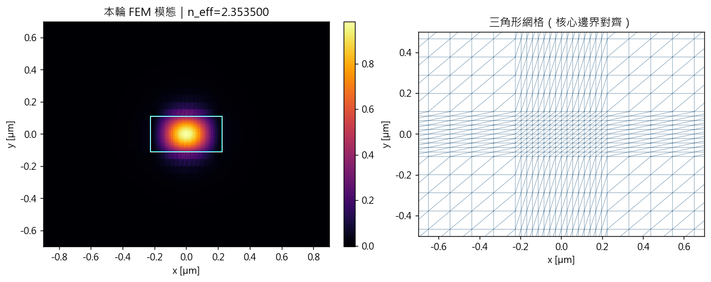
圖 1｜本輪重新計算。左圖為時間平均縱向 Poynting 密度，除以本圖峰值；青色框為 0.45×0.22 µm 矽核心。右圖為實際有限元素網格。傳播方向垂直於截面，即 z；此圖不是光沿晶片前進的影片。 本輪準 TE 模態 n_eff=2.353500 ，TE fraction=0.976415 。femwell 的 TE fraction 是橫向 Ex／Ey 場的比例判據，不代表 97% 的總功率留在矽內。電場延伸到包覆層是導模的一部分。
最後一欄是非色散假設下的 ∫core ε|E|²／∫all ε|E|²；它不是輸出功率或傳輸效率。求解與選模方式參考 Femwell 官方範例 ，本輪以 TE fraction 與有效折射率共同挑選導模。
先檢查網格與有限計算邊界 細／中網格差為 3.571e-05 ；把半區域從 ±1.5×±1.0 µm 擴大至 ±2.0×±1.5 µm 後，n_eff 差為 2.020e-05 。本課門檻為兩者皆小於 10⁻³。這只支持此理想截面模型的比較，不是實際製程的精度或基板洩漏驗證。
5．本輪 MMI 模態展開：看見多模干涉 在均勻 MMI 主體內求解橫向模態 φₘ(y)，每個模態有自己的 βₘ。將同一個入射高斯光場分解，再沿傳播方向累積相位：
ψ(y,z) = Σ aₘ φₘ(y) exp(i βₘ z)
aₘ = ∫ φₘ*(y) ψ_in(y) dy
MMI 寬度 W=6 µm；入射中心 y=−1.015 µm；振幅 1/e 半徑=0.35 µm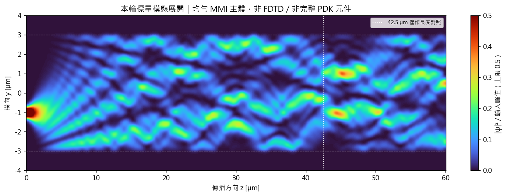
圖 2｜本輪計算，共保留 20 個標量導引模態。色階為 |ψ|²／輸入峰值，顯示上限 0.5，紅色可能飽和。z=42.5 µm 的虛線僅對照 PDK MMI 主體長度；此模型沒有 taper 或實際輸出波導。 上半平面比例是 ∫y>0 |ψ|²dy／∫all |ψ|²dy，並非 out1／out2 波導的耦合功率。投影後的範數守恆也不是完整元件的插入損耗驗證；本模型沒有計入反射、輻射連續譜與輸出端接收。請不要把這張圖用來宣稱 PDK 分光比或器件損耗。
6．MZI：相位如何變成輸出去向 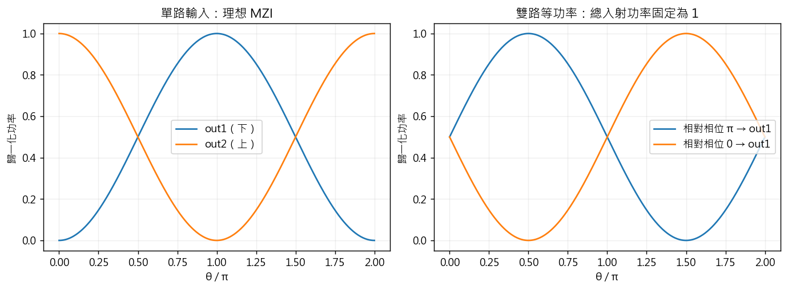
圖 3｜本輪重新計算的理想無損 MZI。上臂施加 θ；圖與 Lab01a 的局部埠定義一致：out1 在下、out2 在上。兩路輸入各為半功率，相對相位改變時總入射功率保持 1。 在這個約定下，單路輸入的兩個功率為 sin²(θ/2)、cos²(θ/2)。M0 S1 測試 GDS 的上方外部埠叫 in0／out0；比較圖與程式時先核對上下位置，再對照埠名。
手算題：100 µm 有效相位長度，要 π 相移需要多少 Δn_eff？ θ=2π Δn_eff L／λ。取 L=100 µm、λ=1.55 µm，Δn_eff=0.00775。這是模態有效折射率變化，不是矽核心材料 Δn，也不能直接換算成 heater 電壓；後者還需要熱模型與校正。
7．與 Lab01a §7.6 的原始 FDTD 比較 完整原圖、幾何與限制見 Lab01a §7.6 分析 。原始場存於 sources/Lab01a/out，本輪重算各檔案的 SHA-256。T≈0.77–0.79 的差額不能全部歸因於數值損耗，也不能直接作為實際器件損耗。
Meep 分支： 本輪執行介面的 WSL 清單查詢回報 Wsl/E_ACCESSDENIED，因此未驗證 Meep 安裝、未重新執行 FDTD，也沒有修改既有 WSL 使用者或環境。官方對 Windows 建議透過 WSL 使用 Meep，見
Meep 官方安裝說明 ；
本輪 WSL 查詢證據 。本輪 FEM、標量傳播、理想矩陣與引用 FDTD 的標示分開保留。
9．本步驗收與 M0 S3 交接 核心成果：本輪 FEM 模態與網格／區域比較、本輪標量傳播場與網格比較、五個理想相位案例、引用 FDTD 指標、來源版本與學員觀察。Meep FDTD 重跑另列為未完成分支，不以標量模型替代它的驗證。
下一步 M0 S3： 把 MZI 的 θ／φ、複數光場與埠序整理成共用 2×2 傳輸矩陣；在固定約定下測試么正性、相位掃描與逐層傳播，交給後續 B7 模型。學員本人完成作答並經講師確認後，才記為本步學習通過。
本章由現行 C 版本的 M0 S2 技術內容整合；原始證據與程式可沿內文連結核對。整合報告不會重新執行該步 EDA／數值求解。
M0 S3 · 我的實作紀錄
共用光學模型與單元測試 我做了什麼，得到什麼結論 我把單顆 MZI、光場串接、損耗與埠序收進共用模型，固定上下埠、正相位與複數矩陣的慣例，執行 18 項模型測試。
我確認相位和複數全域因子不能任意丟掉；一顆元件看似相同的功率，在多路相干串接後可能有不同干涉。後續所有步驟沿用同一套模型。
原始執行紀錄：2026-10-31T10:21:15.520750+08:00 · 本步原始證據 · 分頁閱讀
本步問題： 能否用一份共用的複數傳輸矩陣，描述同一顆 MZI，並讓測試驗證埠序、相位、功率與串接都一致？本輪結果： 18/18 個測試方法通過；5/5 種受控錯誤被抓到；舊相位設定相容性回放 80/80。
1．先預測，再看程式 建議 60 分鐘：讀圖與預測 10 分、共用模型 10 分、執行測試 10 分、修改範例 10 分、分析錯誤 10 分、交接記錄 10 分。
只打上埠、θ=0，光應從上埠還是下埠離開？ 只打一路時，φ 改變會不會改變兩路輸出功率？若兩路同時打光呢？ 每一顆元件都通過功率守恆，是否代表相位與埠序一定正確？ 兩個矩陣依序作用時，為何後遇到的元件乘在左邊？ 2．先固定埠序與物理位置 圖 1｜本步共用約定：向量 [upper, lower]；φ 在上方輸入，θ 在上方內臂。這是模型示意，非版圖。與 M0 S1 外部埠 in0／in1、out0／out1 對齊。 M0 S2 的局部向量以 [lower, upper] 排列。本步使用交換矩陣 P 同時變換輸入、輸出：T_lower=P·T_upper·P。只換輸出兩列會代表另一個映射。這個 2×2 換序用於單顆 MZI；B7 使用另外的五路全域埠表。
3．把結構寫成複數矩陣 H = (1/√2) [[1, i], [i, 1]]
Pφ = diag(exp(iφ), 1)
Pθ = diag(exp(iθ), 1)
a = 10^(−loss_db/20)
T(θ, φ) = a · C₂ · Pθ · C₁ · Pφ
理想時 C₁=C₂=H理想矩陣可獨立展開為：
T = a i exp(iθ/2) [[exp(iφ) sin(θ/2), cos(θ/2)],
[exp(iφ) cos(θ/2), −sin(θ/2)]]先算 Eout=T·Ein，再算各埠 P=|E|²。單路上埠輸入時，bar 功率為 sin²(θ/2)，cross 為 cos²(θ/2)。程式使用弧度；範例設定的 theta_pi、phi_pi 則以 π 為單位，讀取後才轉成弧度。
對整個輸入向量乘共同相位，不改變輸出功率。但單顆 MZI 嵌入含旁路的多路網路時，其共同相位是兩條作用線相對其他線的相位，必須保留。因此本步連完整複數矩陣一起核對。
共用模組放在哪裡？ 模型範圍：前向集總 MZI；可選均勻插入損耗與無損 coupler 分光誤差。尚未加入反射、色散、版圖路徑萃取或 heater 校正。M0 S2 的 n_eff 不會自動成為完整 PDK 模型。
4．我執行與修改的範例 Set-Location -LiteralPath 'C:\EDA_Codex\Lab06b'
& .\scripts\run_m0_s3.ps1使用 m0_s3_example.json ，可觀察與修改輸入、θ、φ、loss_db 和兩顆耦合器的誤差。這些設定只作用於教學範例；標準測試及相容性回放使用各自固定案例。
基準：theta_pi=0.5、phi_pi=1、兩路同相等振幅、loss_db=0。預測輸出後再執行。 只將 phi_pi 改為 0，再執行；記錄光轉到哪個埠。 把 phi_pi 還原為 1，再把 loss_db 改為 3；輸出方向相同，總功率應為輸入的 10⁻⁰·³≈0.501187 倍。 完成後還原範例設定；把自己的設定副本與觀察存入 learner/。 測試入口：test_optical_models.py ；執行與證據入口：run_models.py 。
本輪範例：沿光路逐步追蹤 目前 θ=0.500π、φ=1.000π、loss_db=0.000。複數場以 real±imag·i 表示。
5．θ／φ 如何改變輸出 圖 2｜本輪由共用矩陣計算的理想參考圖。左：單路上埠輸入，φ 不改變功率；右：兩路同相等功率、總功率 1，θ／φ 共同決定上埠輸出。此圖不使用上方範例的額外損耗或分光誤差。 6．單元測試與受控錯誤 測試包含：完整複數矩陣、耦合器 90° 相位、切換／分光、隨機相位與分光誤差下的么正性、損耗換算、共同／相對相位、2π 週期、埠序轉換、非法參數、非相鄰埠嵌入、串接順序、邊界判讀、S2 相容及舊 B7 回放。18 個測試方法內含多組參數案例。
查看全部測試方法 這些注入 log 內的失敗是預期證據，不代表正式模型未通過。實數 Hadamard 仍可通過么正性，卻不符合本課程的光學相位約定；因此需要複數矩陣與已知切換態的測試。
7．舊 B7 設定的相容性回放 本段供講師確認共用模型與既有資料一致；B7 組網的學員主實作仍在 M1。沿用舊課程的七顆 MZI 排程與十四相位，重新計算五個函數各 16 組四路輸入，並核對儲存的完整複數 U。
判讀為 ΔP=P(out1)−P(out3)，正值判 1、負值判 0；|ΔP|≤ε 時 bit=None。回放使用理想無損模型、參考光振幅 R=3；未驗證新 PDK、熱控制或實體 Chip。80 筆 CSV · 舊相位來源與 SHA-256 。
8．接回 S2 的物理參數 沿用 S2 的 n_eff=2.353500、λ=1.55 µm，均勻段相位為 βL=2πn_effL／λ。若兩臂只差幾何長度，π 相位差對應 ΔL≈0.329297 µm 。
固定長度上改折射率，則使用 Δθ=2πΔn_effL／λ；與上列幾何長度差是兩種參數變化。這些公式不直接給出 heater 電壓，也沒有包含真實路徑的色散或損耗校正。
本輪完整結果、版本、程式雜湊與互動對照樣本
下一步 M1 S1： 光訊號做邏輯：輸入編碼、相干參考光 R、混合與功率差讀取。此處完成的是共用模型與測試基準，後續仍需建立 B7、PDK 模擬、Chip 版圖與驗證。
本章由現行 C 版本的 M0 S3 技術內容整合；原始證據與程式可沿內文連結核對。整合報告不會重新執行該步 EDA／數值求解。
M1｜我把光場運算變成可切換邏輯 固定編碼與光路，使用複數矩陣、參考光和差分功率，建立可追溯的五功能基準。
M1 S1 · 我的實作紀錄
光訊號編碼、參考光與功率判讀 我做了什麼，得到什麼結論 我用 OOK 振幅 0／1 表示資料，分清光場、光功率與接收判讀，再比較參考光移除、改相位及加入損耗的結果。
我採用的 B7 輸入為 [x1,x2,x3,x4,R]，R 的振幅是 3，所以它的正規化功率是 9。參考光提供相干背景；它的相位、振幅與門檻都會影響邏輯判讀。
原始執行紀錄：2026-10-31T10:21:18.253762+08:00 · 本步原始證據 · 分頁閱讀
這一步要回答： 位元在哪裡變成光？參考光提供什麼？光偵測器怎麼把功率變成 0／1？本輪結果： 16/16 項本步測試、18/18 項前步回歸、8/8 實驗檢查通過；學員作答待驗收。
1．先預測：場、功率、位元是三個不同量 核心 30 分鐘：預測 5 分、輸入編碼與 B7 標註 10 分、AND2 操作 10 分、交付 5 分。兩顆 MZI 的 NAND2 與相位掃描可再用 15 分鐘深入。
R=3 是 3 倍光功率，還是 9 個功率單位？ 兩路振幅都是 1，為何混合後可以有一個埠的功率為 2？ 輸入 00 且沒有參考光，線性被動光路能否自己產生亮光？ 輸出兩埠都暗時，ΔP=0 應該一律判成 1 嗎？ 2．白話範例：用亮／暗編碼，保留複數相位 資料位元 b ∈ {0,1}
E = b √P_on exp(iα) # 本步 P_on=1；相位 α 以 rad 表示
P = |E|² # 偵測器讀取功率，不直接讀複數 E
v = [x1,x2,x3,x4, R exp(iψ)]ᵀ
B7 基準：R=3、ψ=0 → P_R=9；各資料 1 的功率為 1本課程採開關振幅編碼（OOK）：0 對應零場，1 對應振幅 1；資料光具有受控相對相位。此處不使用 ±1 編碼。若以 1 個歸一化功率單位代表 1 µW，則單路資料 1 為 1 µW、B7 的 R=3 為 9 µW，四路全 1 的總輸入為 13 µW。
每組資料使用相同的功率刻度與固定門檻。不要把每個輸入向量各自除以其長度；那會使參考光隨資料變動，改變原本的邏輯實驗。
完整 16 組編碼 CSV ：pattern_index 的最低位元對應 x1；顯示字串仍依 x1→x4 排列，因此 index 1 顯示 1000。
3．在 B7 上標出輸入、混合與讀取 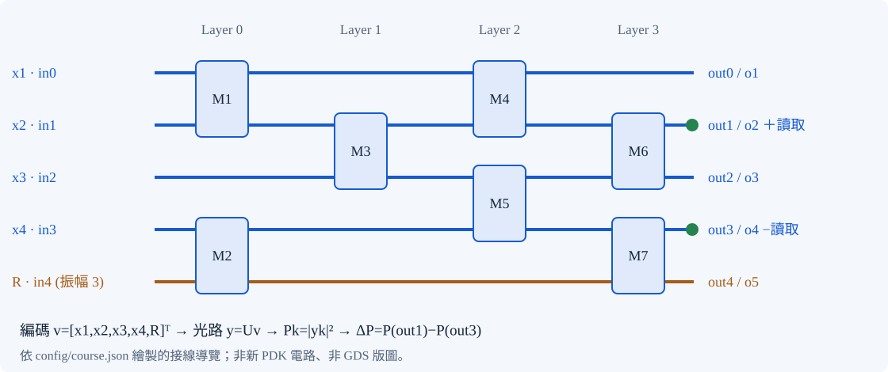
圖 1｜由課程 OPS 規格繪製的導覽圖。x1–x4 在資料光輸入端；R 在第五路。heater 設定 θ／φ，資料位元不靠每次切換 heater 編碼。接收端固定讀兩個輸出功率，其他輸出也帶走能量。 B7 仍沿用 ΔP=P(out1)−P(out3)、門檻 0、ε=10⁻¹⁰；本頁先用小網路理解編碼與讀取。B7 的 5×5 U 建立留到 M1 S2；不要把局部 AND2 的門檻與埠位直接套到 B7。
4．我的操作：從固定相位的單顆 MZI 看 AND2 Set-Location -LiteralPath 'C:\EDA_Codex\Lab06b'
& .\scripts\run_m1_s1.ps1沿用 M0 S3 的 T(θ,φ)，固定 θ=π/2、φ=0。資料光由兩個輸入進入；功能設定在四組資料之間維持不變。
k = (−1+i)/2
E_upper = k(x1+x2)
E_lower = k(x1−x2)
ΔP = P_upper−P_lower = 2x1x2 # 兩路同相
margin = ΔP−T；固定 T=1
margin>ε → 1；margin<−ε → 0；其餘 → 邊界（bit=None）11 的兩個輸入總功率是 2，輸出是 2+0，仍然守恆。01／10 的輸出是 0.5+0.5。相干光場先相加／相消，再取模平方；不能先把每一路輸入功率相加當成某一埠的功率。
修改設定，再重跑 開啟 m1_s1_example.json ，保留 bits=[1,1]；先記錄基準。 把 and_relative_phase_pi 從 0 改成 0.5，再改成 1，觀察兩個功率及固定門檻判讀。 還原相位 0，把 and_loss_db 改成 3 與 4；門檻仍為 1。比較 3 dB 時 ΔP≈1.002374 與 4 dB 時 ΔP≈0.796214，說明接近門檻的餘裕。 修改只改變「學員範例」；固定基準測試仍使用標準案例。完成後還原設定，再保存自己的設定副本。 5．參考光：讓 00 仍有可混合的光場 沒有參考光時，OOK 的 00 是零向量；任何固定線性光路都將它映射為零。若要求 NAND2 的 00 在選定輸出呈亮光，需要額外光源。這不表示所有電子判讀方式都無法對黑暗輸出邏輯 1；此處限定亮光為 1、正功率門檻的編碼方式。
深入實驗使用三路 [x1,x2,R]、兩顆共用 MZI。第一顆混合資料，第二顆混合第一顆上輸出與 R；另外兩個輸出完整保留。此處 R=2，與 B7 的 R=3 是不同網路設定。
MZI1：θ1=π/2，φ1=0，作用於 modes (0,1)
MZI2：θ2=2 asin(√(2/3))，φ2=π/4，作用於 modes (0,2)
U3 = embed(T2) · embed(T1)
Eout0 = q (R exp(iψ)−x1−x2)/√3，|q|=1
Pout0 = |R exp(iψ)−x1−x2|²/3
基準 R=2、ψ=0；固定單埠功率門檻 T=1/6係數 [−1,−1,1]/√3 的範數為 1，且程式核對完整 U3 的么正性與三個輸出總功率。選定輸出的抵消代表能量流到其他埠。與原 C01 的 E=(R−x1−x2)/2 概念式相比，本步使用可由兩顆無損 MZI 實現的 1/√3 係數，功率與門檻一起重新計算。
6．相干與相位：同樣功率不保證相同邏輯 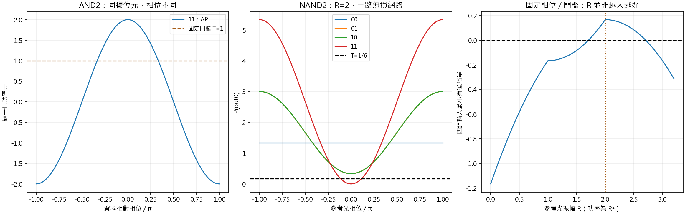
圖 2｜本輪全部曲線由共用複數矩陣計算。左：11 的 ΔP=2cos(α)。中：改 R 相位後，原本相消的 11 變亮。右：各輸入依真值取有號裕量，再取最小值；大於 0 才表示四組都有正確餘裕。 若相位在接收平均期間均勻遍歷 0～2π，交叉干涉項平均為零。本輪用 64 個等間隔相位示範，AND2 的 11 平均功率為 [1,1]、平均 ΔP≈0，無法通過原本的門檻 1。這是相位集合平均，沒有宣稱實際雷射的相干時間、頻寬或錯誤率。
7．從功率走到光電流、電壓與判讀 假設匹配 PD，且此處定義接收端正向差分增益：
I+ = ℛ P+；I− = ℛ P−
ΔI = ℛ (P+−P−)
Vdiff = Zt ΔI；Vthreshold = Zt ℛ P_unit T
示例：P_unit=1 µW、ℛ=0.8 A/W、Zt=10 kV/A
AND2 的 11：ΔP=2 → ΔI=1.6 µA → Vdiff=16 mV
固定 T=1 → Vthreshold=8 mV上述參數是單位換算練習，沒有選定真實偵測器或聲稱頻寬。實際 TIA 的正負極性、兩顆 PD 響應差異、偏移、暗電流、雜訊、飽和與時間響應都需要校正。電子判讀規則提供非線性；被動線性光路本身不會直接輸出數位位元。
物理依據：Hamamatsu：PD 響應度與光功率／光電流 ；Thorlabs：匹配 PD 的平衡偵測與 TIA ；TU Delft：干涉與相干 。本頁公式推導、參數及實驗結果由本課程程式核對。
8．檢查結果與檔案
下一步 M1 S2： 依七顆 MZI 的 OPS 建立 B7 的 5×5 U，逐層追蹤五路光場並檢查么正性。後續再處理完整功能設定、PDK 與 PIC 版圖。
本章由現行 C 版本的 M1 S1 技術內容整合；原始證據與程式可沿內文連結核對。整合報告不會重新執行該步 EDA／數值求解。
M1 S2 · 我的實作紀錄
B7 接線與 5×5 傳輸矩陣 我做了什麼，得到什麼結論 我依四層 Brick 接線建立七顆 MZI、五條模式軌與六段 bypass，組出 5×5 複數傳輸矩陣 U，並逐層追蹤光場。
我的差分讀取是零起算 out1 與 out3；資料輸入和 R 的順序始終固定。幾何接線、矩陣乘法順序與實體埠位必須對得上。
原始執行紀錄：2026-10-31T10:21:20.474333+08:00 · 本步原始證據 · 分頁閱讀
這一步要回答： 如何讓七顆 2×2 MZI 與六段直通光路，描述同一個五路光學網路？本輪結果： 17/17 項本步測試、34/34 項前步回歸、12/12 項模型檢查通過。學員作答另行驗收。
1．先預測，再動手 建議 60 分鐘：接線標註 10 分、2×2 嵌入與乘法順序 15 分、執行與逐層追蹤 15 分、單埠探測與錯誤分析 10 分、作答交付 10 分。
Layer 1 只有 M3，其餘三條光路應消失、歸零，還是直通？ 光先經 M1、最後經 M7，U 的最左邊是哪顆矩陣？ 用單位場只打 in2，讀到的是 U 的第 2 列還是第 2 欄（零基索引）？ 若 U†U=I，是否已證明接線順序正確？ 2．白話範例：把五條光路當成五個欄位 輸入向量固定為 v=[x1,x2,x3,x4,R]ᵀ，光路 index 由上到下為 0～4。每顆 MZI 只更新相鄰兩個欄位；同一層沒接入 MZI 的欄位保持原值。
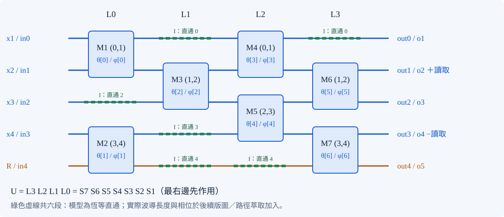
圖 1｜依 config/course.json 的 OPS 繪製。M1～M7 是實體元件名稱；theta／phi 陣列索引是 0～6；layer 是 0～3。圖為前向模型接線，尚未加入實際波導的長度、損耗或相位。 B7 判讀埠延用零基 out1−out3，即一基名稱 o2−o4。本步先建立 U 與完整五路輸出；功能真值表與加權光場判讀留到後續步驟。
3．把一顆 2×2 矩陣嵌入 5×5 以 M3 作用於 modes (1,2) 為例，先建立 I₅，再把那兩列與兩欄交會的 2×2 區塊替換成 T3。T 的第一個位置仍對應物理上方光路。
T3 = [[a,b],[c,d]]
S3 = [[1,0,0,0,0],
[0,a,b,0,0],
[0,c,d,0,0],
[0,0,0,1,0],
[0,0,0,0,1]]
L0=S2 S1；L1=S3；L2=S5 S4；L3=S7 S6
U=L3 L2 L1 L0=S7 S6 S5 S4 S3 S2 S1
y=Uv同一層的 MZI 作用在不重疊的兩組模式，所以可交換相乘順序。跨層元件通常共用光路，不能任意交換。每顆 MZI 的完整複數共同相位也要保留；它是相對其他直通光路的相位。
學員實作的共用介面 from common import b7
import numpy as np
top = b7.load_topology()
theta = np.array([0.5]*7)*np.pi
phi = np.zeros(7)
U = b7.transfer_matrix(top, theta, phi)
layers = b7.layers(top, theta, phi)
trace = b7.trace(top, theta, phi, [1,0,0,0,3], by_layer=True)
print(U.conj().T @ U)程式讀取同一份課程架構，不另手抄 OPS。測試另外保留固定七組接線作獨立核對，避免設定被誤改後仍自我通過。共用 b7.py 。
4．我的操作：建立 U，再看五路光場 Set-Location -LiteralPath 'C:\EDA_Codex\Lab06b'
& .\scripts\run_m1_s2.ps1預設 m1_s2_example.json 使用四路資料 1000、R 振幅 3、七顆 θ=π/2、φ=0，沒有 MZI 損耗。這是接線／混合範例，尚未命名為 AND 或其他邏輯功能。
先執行並保存目前的 5×5 U、逐層場與功率。 只把 theta_pi[2] 從 0.5 改成 1；重跑並比較 M3 前後的場，以及最後的 U。 把全部 theta_pi 改成 0、全部 phi_pi 保持 0，做全 cross 的五個單埠探測；與下方固定路由表核對。 把全部 theta_pi 與 phi_pi 都改成 1，驗證 U≈I；不要只改 θ=π 就宣稱得到 I。 最後還原設定，提交修改前後副本。標準驗收案例與學員設定分開，不以學員參數判定某種邏輯功能。 顯示值經四捨五入；實際計算與 JSON 保留完整精度。每個 Uᵢⱼ 是複數場係數；|Uᵢⱼ|² 代表只有 in j 打單位場時，在 out i 的功率。多路相干輸入必須先做 Uv，再取 |y|²，不能直接用 |U|² 乘各路功率。
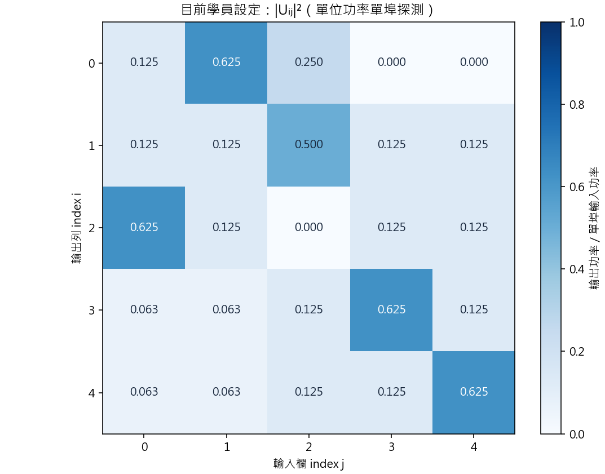
圖 2｜目前學員設定的單埠功率映射；相位資訊仍在上方複數矩陣中。U[0,3] 與 U[0,4] 的結構性零來自有向逐層接線，與某組相位造成的偶然相消不同。 5．逐層追蹤：未讀取的埠也帶走能量 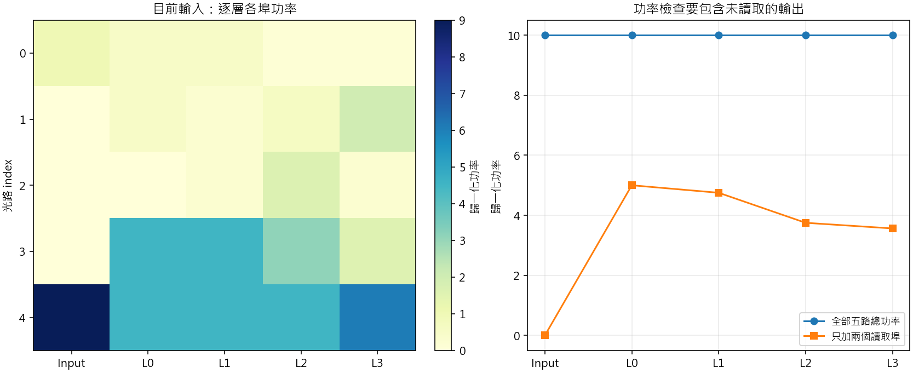
圖 3｜目前學員設定的逐層功率。理想無損時五路總和守恆；只加 out1 與 out3 不必等於總功率。若設定了非零 MZI 損耗，五路總功率可以下降。 逐層場／功率 CSV · 逐顆 M1～M7 場、所有 S／L／U 與完整結果 JSON 。
在頁面先預測，再與 Python 對照
6．五個單埠探測：U 的每一欄從哪裡來 依序輸入 e₀、e₁、e₂、e₃、e₄。由線性關係 Ueⱼ，輸出向量就是 U 的第 j 欄。單埠探測的其他輸入包含 R 都設為 0；不要把固定參考光加進基底探測，否則得到的不是那一欄。
全 bar（θ=π、φ=0）得到 diag(1,1,−1,1,1)，功率路由沒有交換，但 mode2 多了 π 相位；只有再把各顆 φ 設為 π 才得到本步的 U≈I。這是「看功率一樣」仍不足以確認完整複數網路的例子。
7．驗證：么正性、接線與相位都要核對 錯誤範例另建矩陣，不替換或覆寫正式模型。反轉順序與漏掉一顆無損 MZI 仍可能得到么正矩陣，因此要再核對已知路由與獨立場更新。圖 2 的兩個結構性零也顯示，本課程 B7 具有特定連接限制，不能直接把它當成可任意設定所有 5×5 矩陣的通用網路。
可選損耗的範圍 mzi_loss_db 可為非負純量（每顆相同）或七個值，依 M1～M7 排列。只在作用的兩條模式套用該顆損耗，直通光路維持 I。不能直接將整個 U 乘七顆損耗的總因子。全 bar、每顆 1 dB 時，五條模式分別經過 2、4、3、3、2 顆 MZI；這只是元件損耗示範，實際直通波導的路徑相位／損耗尚未加入。
8．程式、檔案與來源 接線來源：本專案 course.json 與原 C01 教材；舊相位只用於五組複數矩陣相容性核對。背景閱讀：Clements 等人：多埠干涉儀由分光器與相位器組成的網路 。本文 B7 是本課程固定拓樸，其可達性與矩陣結果由本步程式獨立計算。
下一步 M1 S3： 用 1000／1100、R=3，逐項計算讀取埠的複數加權和，再從 y=Uv 到功率、ΔP 與判讀，核對手算與程式。
本章由現行 C 版本的 M1 S2 技術內容整合；原始證據與程式可沿內文連結核對。整合報告不會重新執行該步 EDA／數值求解。
M1 S3 · 我的實作紀錄
複數加權和、光功率與差分判讀 我做了什麼，得到什麼結論 我對 1000／1100 逐項列出兩個讀取埠的複數場貢獻，先做加權和，再取模平方，分解自項、干涉項與差分 ΔP。
我看到漏掉交叉干涉項會把 ΔP 的符號算錯；把振幅差當成功率差也不成立。我採用 ΔP=P(out1)−P(out3)，並保留 ε 邊界與 signed margin。
原始執行紀錄：2026-10-31T10:21:23.281776+08:00 · 本步原始證據 · 分頁閱讀
這一步要回答： 為什麼兩個讀取埠的功率差會由負轉正？每一路輸入對這個結果貢獻了什麼？本輪結果： 15/15 項本步測試、51/51 項前步回歸、11/11 項加權和檢查；核心加權和與判讀驗證通過。學員作答另行驗收。
1．先預測：先加場，還是先加功率？ 建議 60 分鐘：複習埠位與相位來源 5 分、手算 1000／1100 各 10 分、功率與干涉項 10 分、程式與互動核對 15 分、交付 10 分。
R 振幅為 3，對 out1 的貢獻是 3、9，還是 3U[1,4]？ 同一個埠的兩個場方向相反，功率的干涉項可以是負值嗎？實際功率呢？ ΔP=0 或接近 0 時，能否直接宣稱輸出有效邏輯 1？ 若把 U 的一列做複數共軛，是否仍是 y=Uv 的同一個加權和？ 2．固定條件：接續 B7，沿用一組已知相位 本步由共用 b7.py 重新建立 U，沿用舊教材 AND2 的十四個完整精度相位。僅以 1000／1100 做手算範例，不重新合成相位；五種功能的完整 80 筆驗收留到 M1 S4。
輸入順序：v=[x1,x2,x3,x4,R]ᵀ
1000 → v=[1,0,0,0,3]ᵀ，總功率=10
1100 → v=[1,1,0,0,3]ᵀ，總功率=11
本步資料光及 R 的基準相位皆為 0
正讀取：out1（零基）= o2（一基）
負讀取：out3（零基）= o4（一基）
ΔP = |y_out1|²−|y_out3|²
固定門檻 τ=0；邊界容許 ε=10⁻¹⁰（歸一化功率單位）本頁的 y_out1／y_out3 使用程式零基索引；原課程的 y2／y4 對應同兩個埠。原相位來源及 SHA-256 · 回看 B7 接線與矩陣 。
3．手算兩個案例：逐項乘，再做複數相加 tᵢⱼ = U[i,j] v[j]
yᵢ = Σⱼ tᵢⱼ
y_out1(1000) = U[1,0] + 3U[1,4]
y_out3(1000) = U[3,0] + 3U[3,4]
y_out1(1100) = U[1,0] + U[1,1] + 3U[1,4]
y_out3(1100) = U[3,0] + U[3,1] + 3U[3,4]1000：先遮住最後一列的結果，自己算一次 累加結果： y_out1=1.737167-0.821316i；y_out3=0.009406-2.409896i。注意： R 的場先乘 3，之後才計算整個和的模平方。
1100：先遮住最後一列的結果，自己算一次 累加結果： y_out1=2.315091-1.094552i；y_out3=0.008227-2.107663i。注意： R 的場先乘 3，之後才計算整個和的模平方。
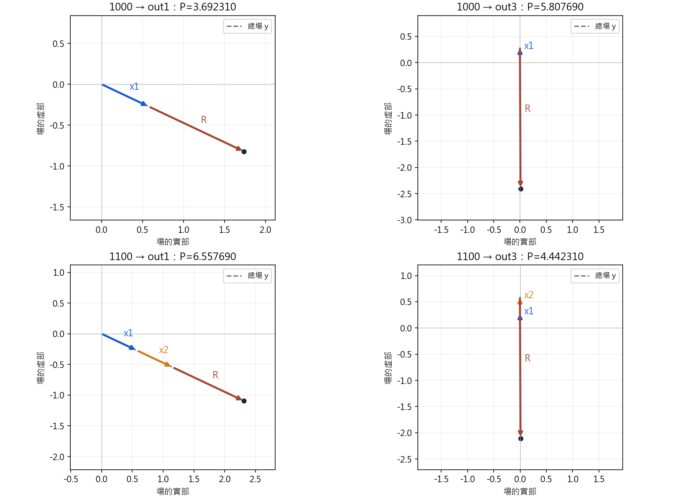
圖 1｜本輪複數平面上的首尾相接。彩色箭頭為各路 tᵢⱼ；虛線為從原點到總場 yᵢ。振幅為 0 的輸入不畫箭頭，但計算表保留五個位置。箭頭方向代表相位，圖不是空間光場傳播圖。 4．取模平方：把漏掉的干涉項找回來 若 y=a+ib，則 P=|y|²=a²+b²
Pᵢ = |Σⱼ tᵢⱼ|²
= Σⱼ |tᵢⱼ|² + Σⱼ<ₖ 2 Re(tᵢⱼ conj(tᵢₖ))
= 自項功率 + 成對干涉項
干涉項可正可負；完整 Pᵢ 必須非負。查看非零的成對干涉貢獻 把所有輸入的相對相位獨立平均，交叉項才會全部消失。只讓 R 的相位平均，資料光彼此的干涉仍可能保留。本步測試也核對這個差異。背景公式見 TU Delft：相干場總和與干涉項 ；本頁數值由本課程程式重新計算。
5．功率差、裕量與固定門檻 ΔP = P(out1)−P(out3)
margin = ΔP−τ
margin > ε → bit=1
margin < −ε → bit=0
|margin|≤ε → bit=None，邊界，不能算有效真值
基準 τ=0、ε=10⁻¹⁰；不對每組輸入另調門檻或各自歸一化。1000 的兩個讀取埠都亮，但 out3 較強，所以判 0；1100 的 out1 較強，所以判 1。正負差分不等於亮／暗單埠判定。所有五路總功率分別仍是 10 與 11。
進階：用一個 Hermitian 矩陣重算功率差 令 r+=U 的 out1 那一列，r−=U 的 out3 那一列
Q = r+†r+ − r−†r−
ΔP = v†Qv
Q 的非對角元素保留輸入間的干涉；
此式是同一個功率差的代數重寫，不是另一套判讀規則。注意外積中需要共軛；原本的 y=Uv 加權和不把 U 的列先取共軛。程式核對 Q=Q† 與 v†Qv 的結果。
ε 是本模型的絕對數值容許，不是量測雜訊或錯誤率規格。即使門檻 0 的符號在共同縮放下保持，極小功率仍可能落入 ε 邊界；實際偵測器的雜訊、偏移與頻寬需另外建模。
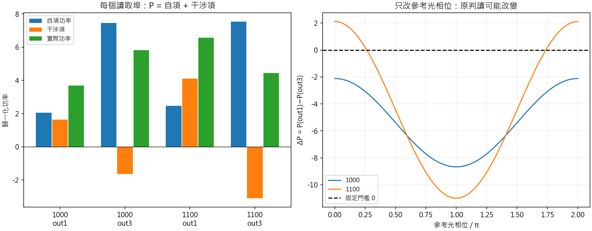
圖 2｜左：兩個案例的功率分解。右：固定同一組 AND2 元件相位，只改輸入 R 的相位；基準是相位 0。這是理想穩態敏感度示範，未估計 BER 或實體控制容許範圍。 6．我執行與修改的範例 Set-Location -LiteralPath 'C:\EDA_Codex\Lab06b'
& .\scripts\run_m1_s3.ps1開啟 m1_s3_example.json 。phase_setting 固定 AND2；本步只改輸入、參考光與讀取條件。
先以 bits=[1,1,0,0]、R=3、所有輸入相位 0 重跑，對照表 3～6。 把 bits 改成 [1,0,0,0]，對照另一張手算表。 把 reference_phase_pi 改成 0.5，再改成 1；觀察複數貢獻、干涉項與 ΔP。 把相位還原 0，將 reference_amplitude 改成 0；再以同一個 U 計算。不要順便調整門檻。 另存自己的設定與結果，完成後還原基準。頁面顯示六位小數，正式判讀使用完整精度與 ε。 頁面互動：看每項貢獻如何改變
7．檢查結果與常見錯誤 這些錯算另建結果，沒有修改正式模型。U 的共軛錯誤在某些實數或近共線係數案例中，功率可能看起來相同；所以測試使用獨立的複數算例，不能只靠兩個數位位元判斷計算正確。
8．程式與可追溯檔案
下一步 M1 S4： 載入五種功能的已驗證相位，固定光路、編碼與判讀，跑完整 80 筆真值表，檢查最小有號裕量及未作用輸入。
本章由現行 C 版本的 M1 S3 技術內容整合；原始證據與程式可沿內文連結核對。整合報告不會重新執行該步 EDA／數值求解。
M1 S4 · 我的實作紀錄
五功能相位與完整 80 筆比較 我做了什麼，得到什麼結論 我固定同一顆 B7、編碼、參考光與讀取門檻，只切換五組相位程式，逐一重播 AND2、OR2、XOR2、AND4、OR4 的十六組輸入。
五功能共 80/80 通過；即使某功能只用 x1、x2，我仍保留 x3、x4 的所有組合。我以 signed margin 追蹤距離判讀邊界的餘裕，而非只看 0／1。
原始執行紀錄：2026-11-01T10:09:02.664468+08:00 · 本步原始證據 · 分頁閱讀
這一步要回答： 同一顆 B7、不換光路或判讀，只換十四個相位，五種功能能否在全部四位元輸入下都正確？本輪結果： 80/80 筆真值、12/12 組未作用輸入檢查；18/18 項本步測試、66/66 項前步回歸。五功能 80 筆核心驗收通過。學員作答另行驗收。
1．先預測，再執行完整驗收 建議 90 分鐘：預測與固定規則 10 分、五組相位 10 分、80 筆執行 20 分、未作用輸入 15 分、裕量 15 分、診斷與交付 20 分。
AND2 只看 x1／x2，為何仍要跑 16 組，而不只跑四組？ 某組資料的 |ΔP| 很大，但符號與真值相反，應算通過嗎？ 把參考光關掉或把兩個讀取埠交換，原本的相位還能完成所有功能嗎？ 若改相位後出錯，可不可以每組資料另外換一個門檻？ 2．先固定驗收規則與真值 五路輸入：[x1,x2,x3,x4,R]ᵀ；資料 0→場0、1→場1
資料光與參考光的基準相位皆為 0；R 振幅=3，功率=9
光路：同一組 B7 OPS，七顆 MZI／十四個相位
模型：理想、無損、前向；不對每組輸入各自歸一化
ΔP=P(out1)−P(out3)；固定門檻 τ=0
ΔP>ε → 1；ΔP<−ε → 0；|ΔP|≤ε → 邊界（None）
ε=10⁻¹⁰，邊界不得算成正確邏輯
每個功能都送入全部 16 組四位元資料，共 5×16=80 組陣列 index 的最低位元是 x1，顯示字串仍依 x1→x4 排列。因此 index 1 顯示 1000、index 3 顯示 1100。AND2／OR2／XOR2 的 x3、x4 不參與布林定義，但仍是實際送入的光場。
3．五組相位，維持同一個 B7 本步從 C 槽已有的相位快照擷取 theta／phi，使用完整精度重新組 U。這是本輪完整功能驗收，沒有重新最佳化相位。舊檔中的 U 只用於相容性比較，真值由上方布林規則另算。
顯示六位小數供閱讀；執行一律讀取 完整精度相位 JSON 。來源與 SHA-256 · 十四相位 CSV 。theta／phi 單位為弧度；學員誤差設定的 *_pi 則以 π 為單位。
4．學員執行：一次產生 80 筆結果 Set-Location -LiteralPath 'C:\EDA_Codex\Lab06b'
& .\scripts\run_m1_s4.ps1圖 1｜本輪完整 80 筆結果。左：顏色為 ΔP，格內數字為判讀 bit；右：各功能 16 筆中的最小有號裕量。圖只表示目前固定理想模型，不代表製程或量測容許範圍。 AND2：查看完整 16 組真值、功率與裕量 OR2：查看完整 16 組真值、功率與裕量 XOR2：查看完整 16 組真值、功率與裕量 AND4：查看完整 16 組真值、功率與裕量 OR4：查看完整 16 組真值、功率與裕量 下載完整 80 筆 CSV ；JSON 另保存每筆五路複數場、全部輸出功率及輸入／輸出總功率。
5．未作用輸入：判讀相同，不必要求每個功率完全相同 固定 x1／x2，輪流將 x3／x4 設為 00、01、10、11。四組資料的布林真值必須相同，四個判讀也都必須符合它。類比功率差可以不同，只要仍有正確裕量。
只測 x3=x4=0 會漏掉其他實際輸入，不足以確認功能。未作用輸入群組 CSV 。
6．最小有號裕量：方向先正確，才談餘裕 真值 t∈{0,1}
margin = ΔP−τ
signed_margin = (2t−1) × margin
正確方向 → signed_margin>0
錯誤方向 → signed_margin<0
正式驗收：每筆 bit 等於真值，且 signed_margin>ε
minimum_clearance = min(signed_margin)−ε
不能只看 min|ΔP|：方向相反，也可能有很大的 |ΔP|。本輪最小有號裕量最低的是 XOR2 ，約 0.250000 ，最差案例第一筆為 1111。當全部符號正確且 τ=0 時，最小有號裕量與最小 |ΔP| 才相同。這不是噪聲標準差、錯誤率或實體功率規格。
7．診斷實驗：保留基準，改一個條件再比較 圖 2｜本輪只掃描 M1 的 θ 誤差 −0.1π～+0.1π，其餘參數固定、門檻不重新調整。每點都重新跑該功能 16 組。此圖不是完整多參數誤差分析或製程容許規範。 學員可在 m1_s4_lab.json 選功能、資料、R、相位誤差及 MZI 損耗，再重跑。theta_error_mzi_index=0～6 對應 M1～M7。這些修改只改變獨立的學員診斷，正式 80 筆基準始終維持 R=3、無損、零參考相位與門檻 0。
互動預測：只換功能相位，或刻意偏離基準
8．測試與檔案 本步完成理想 B7 的全功能數值驗收。尚未加入新相位合成、PDK 色散／反射、熱校正、動態接收器或實體 Chip 量測；本輪不會改寫原始來源或 D 槽。
下一步 M1 S5： 將固定光路、十四個相位通道、五種功能與判讀規則整理成規格檔及相位設定檔，交給 M2 的 PDK／PIC 實作。
本章由現行 C 版本的 M1 S4 技術內容整合；原始證據與程式可沿內文連結核對。整合報告不會重新執行該步 EDA／數值求解。
M1 S5 · 我的實作紀錄
規格、相位與可攜交接 我做了什麼，得到什麼結論 我把規格、14 個相位通道、光學埠、真值表和共用模型封裝，使用 SHA-256 把相位、規格與表格綁定，並測試搬到新位置的消費端重播。
M1 交接包保留 80 筆基準；相位單位是 rad，沒有推定 heater 電壓。後續回註候選另存，原始 pic_spec.json、phase_settings.json 和交接 ZIP 維持不變。
原始執行紀錄：2026-10-31T10:56:43.171028+08:00 · 本步原始證據 · 分頁閱讀
這一步要回答： M2 能否只拿一份規格與相位程式，就知道如何接線、命名、模擬及讀取同一個 B7？本輪結果： 直接交接包與獨立資料夾均重播 80/80；15/15 項本步測試、84/84 項前步回歸，四種錯誤副本均被拒絕。規格交接與獨立重播通過；學員作答另行驗收。
1．先預測：規格交接要交什麼？ 建議 60 分鐘：規格與版本 10 分、光學埠及相位通道 15 分、獨立重播 15 分、錯誤辨識 10 分、M2 交接記錄 10 分。
相位向量只有十四個數字，沒有通道名稱，M2 能否確定哪個數字送到哪顆 heater？ theta=π 是 π V 嗎？目前能不能填入 PAD1 與 Vπ？ 相位檔來自另一份規格，即使檔名相同，能否直接混用？ 交接包在沒有父層 course.json 的資料夾，能否仍重跑全部 80 筆？ 2．固定邏輯規格，將 M2 未完成項目寫清楚 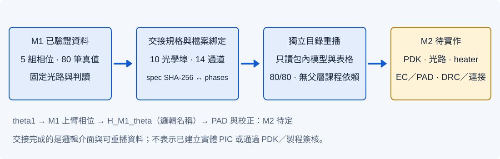
圖 1｜本步交接流程。heater 名稱先固定為邏輯識別碼；實際 heater、PAD、光學接口與校正仍待 M2 建立。 pic_spec.schema = lab06b.pic_spec.v1
phase_settings.schema = lab06b.phase_settings.v1
phase_settings.spec_sha256 = SHA256(pic_spec.json 的完整檔案位元組)
channel_order 與 spec.phase_vector_order 必須一致
固定：[x1,x2,x3,x4,R]ᵀ，R 振幅=3、相位=0
固定：ΔP=P(out1)−P(out3)，τ=0、ε=10⁻¹⁰
範圍：理想前向模型、七顆 MZI、六段恆等直通
待定：實體接口、PAD、heater 校正與路徑傳播這是本課程的版本化 JSON 格式，由 Python 驗證器逐欄與跨檔檢查。修改規格後，必須更新相位檔綁定及重新驗收；只改檔名不能表示資料相容。
3．光學埠：十個都保留，不能只交兩個讀取埠 out1／out3 是差分判讀埠；out0、out2、out4 仍是輸出光路，不能從模型或版圖中消失。後續是否接 EC、終端或其他監測方式，需由 M2 邊界與實體設計決定。
4．相位通道：名稱連到 MZI，再連到邏輯 heater 目前向量順序為 theta1～theta7、phi1～phi7。讀取程式依名稱建立對照表，再取得每顆的 θ／φ，避免只依固定位置猜測意義。測試也確認：通道名稱與相位值一起一致重排時，U 不變；只改其中一邊則拒絕。
H_M1_theta 只是邏輯名稱，不表示已畫出 heater。pad_id、calibration 與 physical_interface 皆為 null；驗證器不接受在 M1 規格內填入未驗證的 PAD 或電壓校正值。
5．交接包與學員執行 Set-Location -LiteralPath 'C:\EDA_Codex\Lab06b'
& .\scripts\run_m1_s5.ps1delivery/m1_handoff/
├─ pic_spec.json # 固定邏輯與 M2 待定欄位
├─ phase_settings.json # 五功能相位＋spec SHA-256
├─ optical_ports.csv # 10 個光學埠
├─ phase_channels.csv # 14 個相位通道
├─ acceptance_truth.csv # M1 S4 的 80 筆對照
├─ model/common/ # 本包自己的理想模型與驗證器
├─ replay_handoff.py # 獨立消費端
├─ manifest.json # 固定檔案清單及 SHA-256
├─ README.md
└─ verification/replay_results.json # 可重新產生的輸出可直接下載 m1_handoff.zip 。Python 需為 3.10 以上並有 NumPy；本機建議使用 EDA_paths.json 的 physics_python。消費端只在本次 Python 程序補上 Windows 數值 DLL 路徑，不修改父層環境或工具安裝。
$cfg = Get-Content -LiteralPath '.\EDA_paths.json' -Raw | ConvertFrom-Json
& $cfg.windows.physics_python '.\delivery\m1_handoff\replay_handoff.py' --gate XOR2 --bits 1010學員練習：將 ZIP 解壓到 C:\EDA_Codex 下另一個新資料夾，使用相同數值 Python 執行 replay_handoff.py。消費端先核對 manifest、版本、規格綁定與 CSV 對照，再重新計算五種功能共 80 筆；不讀父層課程設定。
M2 程式如何讀取交接檔？ from pathlib import Path
import sys
bundle = Path("delivery/m1_handoff").resolve()
sys.path.insert(0, str(bundle / "model"))
from common import handoff, b7
spec, phases = handoff.load_bundle(bundle)
top = handoff.validate_spec(spec)
programs = handoff.phase_catalog(spec, phases)
p = programs["AND2"]
U = b7.transfer_matrix(top, p["theta"], p["phi"])
# M2 以相同 spec 的 instances、光學埠及通道建立 PDK 電路／版圖。此片段仍是理想 U。M2 必須改以 PDK 元件與實際路徑驗證，不能把理想重播結果當成 PDK 模擬。
6．四種錯誤副本，必須在交接時指出 檔案雜湊只確認內容一致，單位、通道及數值仍需另外檢查。上述副本存於 work/m1_s5/controlled_cases/；請勿在正式交接檔上直接製造錯誤。
7．唯讀預覽：從通道名稱到相位，再到判讀 功能 AND2 OR2 XOR2 AND4 OR4 資料 x1x2x3x4 0000 1000 0100 1100 0010 1010 0110 1110 0001 1001 0101 1101 0011 1011 0111 1111 相位通道 theta1 theta2 theta3 theta4 theta5 theta6 theta7 phi1 phi2 phi3 phi4 phi5 phi6 phi7
依正式 JSON 的命名通道及 OPS 重新計算；此處不修改檔案。完整的雜湊、跨檔及獨立重播驗證由 Python 消費端執行。
8．M2 的輸入、工作與待交付項 9．測試與交付檔案
下一步 M2 S1： 確認 PIC 與外部設備的邊界，建立功能方塊圖及 I/O 表，將本步邏輯 core 規格接到實際 PIC 實作。
本章由現行 C 版本的 M1 S5 技術內容整合；原始證據與程式可沿內文連結核對。整合報告不會重新執行該步 EDA／數值求解。
M2｜我把邏輯模型做成 PIC 設計資料 從邊界、PDK 電路與 core，走到接口、規則修正、實際幾何接線和回註交付。
M2 S1 · 我的實作紀錄
PIC 邊界與光電 I/O 我做了什麼，得到什麼結論 我先界定 PIC 內外分工，再列出十個光學埠、十四個相位驅動角色與一個邏輯共地角色，追蹤資料、R、差分接收與未讀取輸出的去向。
十四個控制角色不等於十四顆實體 PAD 加一顆 GND；外部 PD 電流差也不能直接等同 core 功率差。這些規劃到 S5 才落成實際幾何與接口表。
原始執行紀錄：2026-10-31T11:16:42.144925+08:00 · 本步原始證據 · 分頁閱讀
這一步要回答： PIC 上做什麼，外部設備做什麼？每一條光與每一路 heater 電流，最後接到哪裡？本輪結果： 10 個規劃光學接口、14 路相位驅動與 1 個邏輯共地；15/15 項本步測試、99/99 項回歸通過。M1 檔案未改，仍重播 80/80。邏輯邊界與 I/O 核對通過；學員作答另行驗收。
1．先預測：光學運算、資料編碼與數位判讀各在哪裡？ 建議 30 分鐘：讀邊界圖 5 分、光學／電氣 I/O 表 10 分、追蹤路徑 5 分、校正與待辦 5 分、學員交付 5 分。
四路資料位元應直接去 heater，還是先在外部變成光資料？ out1 與 out3 接 PD 後，哪一條是功率差的正端？ 沒有讀取的 out0、out2、out4 是否可以不做任何去向？ 14 路驅動加一個邏輯 GND，是否就代表最終只有 15 顆 PAD？ 2．先畫 PIC 邊界，再列責任 圖 1｜本課程選定的系統邊界。PIC 中規劃 B7、EC、heater 與走線；雷射、資料調變、相位調整、光接收與偏壓驅動在外部。這是功能方塊圖，不是完成的 GDS。 heater 用來設定功能相位；本課程的資料 0／1 由外部光調變送入，不以每一筆資料切換 heater。PD／TIA／比較器將光功率轉成電訊號與數位結果，也在 PIC 邊界之外。
3．光學 I/O：五路進、五路出，保留全部光路 out1→PD_PLUS，out3→PD_MINUS，維持 ΔP=P(out1)−P(out3)。out0／2／4 同樣保留規劃輸出 EC，再接外部監測或負載；本步尚未指定負載元件或完成反射分析。
同源光與 core 參考平面 外部共同雷射 → 分光／四路資料調變＋參考光調整 → 輸入耦合 → M1 core in0..4
M1 core 目標：資料 1 的場=1、R 場=3、R 功率=9
此數字在輸入耦合之後的 core 參考平面定義。
它不是雷射輸出 3 W，也不是忽略不同耦合損耗後的固定分光比例。五路輸入規劃由同一個相干光源分出，但同源本身不表示路徑相位已校正；仍需維持資料與 R 的相對相位。相干場與相位的關係可參考 TU Delft 的干涉與相干教材 。
4．電氣 I/O：14 個驅動端點，不是已完成的 14 顆 PAD 圖 2｜theta1 的邏輯驅動／回路。A、B 為本步支路名稱，不是已驗證的 PDK 電氣 pin。十四個支路各有驅動端，B 端接邏輯 GND；實際 PAD 數、共地配置與阻抗仍待後續檢查。 phase_settings.json 中 theta1 的值：rad
↓ heater／波導校正（待定）
外部 DRV00 的電壓或電流設定（尚未指定數值／單位）
↓ CTRL_theta1 → H_M1_theta.A
heater 支路 → H_M1_theta.B → GND → DRV_RETURN
14 個獨立驅動端點 + 1 個邏輯回路 = 15 個電氣介面角色
實際 PAD 顆數仍為 null，可能需要額外的共地 PAD 或走線設計。phase=π 不能直接寫成電壓 π V。drive_value、drive_unit、calibration、pad_id、physical_pad_count 全部保留未指派；本步不選電源、電壓上限、heater 電阻或熱響應速度。
5．外部 PD 電流不一定等於 M1 的 core 功率差 若 P+、P− 為 M1 core 的實際光功率：
I+ ≈ ℛ+ η+ P+ + Ioffset,+
I− ≈ ℛ− η− P− + Ioffset,−
η：輸出耦合／光路的功率傳輸率
ℛ：PD 響應度（A/W）
先校正兩路損耗、響應度、接收增益與偏移，
才能讓外部判讀對應固定的 core ΔP=P(out1)−P(out3)。
M1 的 normalized 功率轉成 W 的刻度，也尚未指定。本規劃選擇比較「等效 core 功率差」並保留門檻 0；不是直接假設兩個未校正 PD 的原始電流差就符合 M1。PD 響應度與光電流／功率的定義可參考 Hamamatsu 技術說明 。本步的 physical_receiver_spec 及兩路校正均待定。
6．我的操作與可讀取檔案 Set-Location -LiteralPath 'C:\EDA_Codex\Lab06b'
& .\scripts\run_m2_s1.ps1正式邊界設定為 config/m2_boundary.json ，以 SHA-256 綁定 M1 的 pic_spec.json，另存成 overlay，不改寫 M1 交接規格。輸出表格均從同一份設定產生。
互動追蹤：介面是光、相位驅動，還是共地？ 功能區塊 B7 光學運算 規劃光學耦合接口 相位 heater 金屬走線／邏輯 PAD 端點 共同相干光源 四路光資料調變 參考光振幅／相位調整 相對相位對準／穩定 十四路校正後偏壓驅動 正／負讀取 PD TIA／校正／數位比較 其他輸出的外部監測／負載 I/O 介面 OPT_IN0 OPT_IN1 OPT_IN2 OPT_IN3 OPT_IN4 OPT_OUT0 OPT_OUT1 OPT_OUT2 OPT_OUT3 OPT_OUT4 CTRL_theta1 CTRL_theta2 CTRL_theta3 CTRL_theta4 CTRL_theta5 CTRL_theta6 CTRL_theta7 CTRL_phi1 CTRL_phi2 CTRL_phi3 CTRL_phi4 CTRL_phi5 CTRL_phi6 CTRL_phi7 GND 相位程式（只有相位驅動介面顯示 rad 值） AND2 OR2 XOR2 AND4 OR4
本預覽只追蹤邏輯端點與相位值，不計算實際驅動電壓、耦合損耗或接收器校正。
7．核對結果與刻意錯誤 共用邊界核對程式 · 測試原始碼 · 本輪執行入口 。
下一步 M2 S2： 使用 CORNERSTONE PDK 的 MMI 建立電路模型，固定同一份規格及相位設定，重跑 80 筆並比較 M1 理想模型的差異。
本章由現行 C 版本的 M2 S1 技術內容整合；原始證據與程式可沿內文連結核對。整合報告不會重新執行該步 EDA／數值求解。
M2 S2 · 我的實作紀錄
CORNERSTONE PDK 電路與 80 筆比較 我做了什麼，得到什麼結論 我查詢已安裝 CORNERSTONE 的 MMI 埠位，建立 IPKISS／Caphe 電路，固定原規格與相位，與 M1 理想矩陣逐筆比較。
80/80 一致，但我確認本機預設 MMI 使用理想 H 模型。這支持電路接線與模型慣例一致，尚未建立實測 MMI 絕對相位、損耗或色散資格。
原始執行紀錄：2026-11-01T10:09:08.089167+08:00 · 本步原始證據 · 分頁閱讀
本輪實跑： 80/80 筆真值通過；五個完整複數矩陣的最大差 2.559e-16，最大 |ΔPDK−Δ理想| 為 7.105e-15。M1 規格、相位與交接 ZIP 雜湊不變，沒有重調相位。
1．先預測，再跑電路 建議 60 分鐘：模型範圍 10 分、單顆 MZI 15 分、B7 接線 10 分、80 筆比較 15 分、錯誤實驗與交付 10 分。前置完成 M2 S1 邊界／I/O ，沿用 M1 S5 交接包 。
兩個 50:50 MMI 不等於把功率各分一半後直接相加：光場仍保留相位。 預測同一份相位在 PDK 電路中是否通過；先查 PDK 模型內容，再解釋結果。 寫下上路的 PDK 埠名，以及 φ／θ 的位置。錯一個位置，即使總功率守恆也可能算錯邏輯。 2．先查實際載入的模型 重要發現： 本機 CORNERSTONE 的這顆 MMI 繼承 picazzo3.logical.coupler.cell.Coupler2x2Model，本輪載入的預設值形成理想 H。不是量測或 FEM／FDTD 擬合的實體 MMI 響應。80/80 證明這個模型範圍下的電路轉接正確，不能用來宣稱實際晶片良率、頻寬或製程容差。
工具路徑由 EDA_paths.json 讀取。模型稽核 JSON 記錄本機來源檔路徑、SHA-256、compact model 名稱與所有實際參數；沒有把其他同名 MMI 模型當成本次使用的模型。
H = (1/√2) [[1, i], [i, 1]]
P(ψ) = diag(exp(iψ), 1)
T(θ,φ) = H @ P(θ) @ H @ P(φ)3．先做一顆 MZI：埠名與相位 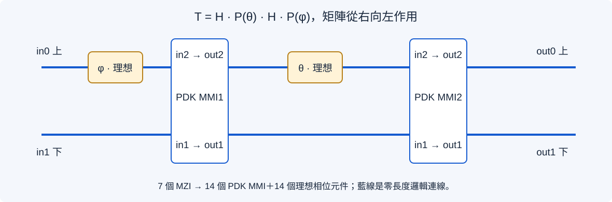
圖 1｜這是邏輯電路圖，沒有代表波導長度或版圖尺寸。PDK in2／out2 在上方；本課程局部 in0／out0 代表上路。 # 實作位置：work/common/pdk_circuit.py
links = [('phi:out', 'mmi1:in2'),
('mmi1:out2', 'theta:in'),
('theta:out', 'mmi2:in2'),
('mmi1:out1', 'mmi2:in1')]
# 以 named ports 讀取 S；列是輸出，欄是輸入。
T = [[S[out_port, in_port][0] for in_port in inputs]
for out_port in outputs]保留每顆 MZI 的整體相位 i·exp(iθ/2)。它相對其他直通路徑仍會造成干涉，不能逐顆刪除。φ 位於第一個 MMI 之前；放到輸出端會改變算式。此步 φ、θ 都是 rad，尚未轉成 heater 電壓。
4．把七顆 MZI 接成 B7 沿 M1 S2 的四層拓樸 ，逐模式更新目前的輸出端點，再接到下一顆 MZI。外層有 7 個 MZI 實例、9 條 MZI 之間的連線與 10 個外露埠。內部每顆 MZI 各有 4 條連線。相位向量依通道名稱映射，不能把交接檔的 θ1～7、φ1～7 誤當成逐顆 θφ 交錯排列。
完整邏輯接線 JSON · 電路建構原始碼 。in0～4／out0～4 都是 core 埠，沒有新增 EC；接收器與驅動器仍在外部。
5．自己重跑 80 筆 Set-Location -LiteralPath 'C:\EDA_Codex\Lab06b'
& .\scripts\run_m2_s2.ps1Runner 讀取交接包並核對雜湊，從 PDK 的 CircuitModel 取得五組完整 10×10 S，再擷取 5×5 前向 U。每組 U 對 16 組完整四位元輸入計算複數場、五路功率及 Δ。x1 是索引最低位，因此 index=1 的 pattern 是 1000。AND2／OR2／XOR2 仍遍歷 x3、x4 的四種實際入光組合。
a = [x1, x2, x3, x4, 3] # 相干場；未正規化成單位總功率
b = U @ a
Pk = abs(b[k])**2
Δ = P1 - P3
bit = None if abs(Δ) <= 1e-10 else int(Δ > 0)
signed_margin = (2*truth - 1)*Δ # 必須 > epsilon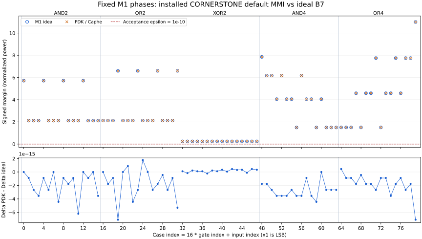
圖 2｜上圖兩種模型的 signed margin 疊合；全部高於 epsilon。下圖為 Δ 的直接相減殘差，量級接近浮點運算誤差；沒有作相位對齊或重新擬合。 下載完整 80 筆 CSV （含五路理想／PDK 功率、Δ、bit、margin、場差）· 複數場 JSON · 五組 U · 完整 S 與埠序 。
逐筆比較：同一份輸入的場、功率與判讀 函數 AND2 OR2 XOR2 AND4 OR4 完整四位元 pattern（x1 在左） 00 · 0000 01 · 1000 02 · 0100 03 · 1100 04 · 0010 05 · 1010 06 · 0110 07 · 1110 08 · 0001 09 · 1001 10 · 0101 11 · 1101 12 · 0011 13 · 1011 14 · 0111 15 · 1111
此函數的完整 PDK 複數 U（上路到下路）
6．不只看 bit：接線、能量與錯誤實驗 前三種接線／參數變體由 Caphe 實際求解；刪除整體相位使用 NumPy 副本；極性反轉使用 80 筆輸出重判。先找場或矩陣差異，再追到功率與 bit；總功率守恆不保證邏輯正確。錯誤實驗 JSON 。
下一步 M2 S3： 建立七顆 MZI 的實體 core 版圖與 GDS。保留這份電路基準，後續抽取實際長度時重新計算路徑相位；14 個相位元件在本步仍是理想模型，並未完成 heater 版圖或電壓校正。
API 參考：Luceda：Creating a First Circuit Simulation 。線上文件為較新版本；本輪以安裝的 IPKISS 2026.03.3 實跑 API 與本機模型稽核為準。
本章由現行 C 版本的 M2 S2 技術內容整合；原始證據與程式可沿內文連結核對。整合報告不會重新執行該步 EDA／數值求解。
M2 S3 · 我的實作紀錄
七顆 MZI core 版圖與 GDS 我做了什麼，得到什麼結論 我由實際 PDK MMI 接點建立單顆 MZI，再放置七顆、連上 bypass 與 lead，加入十四個局部 heater、二十八個局部接觸並輸出 GDS。
初版 core 光學跨度為 2076×120 µm。我用 KLayout 回讀數量、接點、埠與外框；這一步產生 core，外部 EC、PAD、GND 與完整檢查接續完成。
原始執行紀錄：2026-10-31T11:50:55.514362+08:00 · 本步原始證據 · 分頁閱讀
本輪成果： 新建並匯出 7 MZI／14 PDK MMI 的 B7 core；包含 14 個局部 heater、28 個局部金屬接觸落墊、6 段直通與 10 個 core 光學埠。KLayout 獨立回讀核對通過。尺寸： 光學端點跨度 2076 × 120 µm；宣告設計區 2200 × 220 µm。設計區框不代表完成 die 或 EC facet。
1．我的目標與動手順序 建議 90 分鐘：讀拓樸與參數 15 分、單顆 MZI 幾何 20 分、七顆放置與直通 20 分、匯出／回讀 20 分、記錄與交付 15 分。前置：M2 S1 的邊界與 I/O 、M2 S2 的電路基準 。
先預測四欄各放幾顆 MZI、哪些模式必須有直通線，並標註上下埠。 讀取 PDK 埠位置，建立一顆平衡 MZI，確認 φ 與 θ 在正確直線區。 依 OPS 放置七顆共用單元，補直通線與端點引線，輸出真實 GDS。 用 KLayout 回讀檔案，將版圖實例、端點與接線對照到 M1 規格；保存自己的觀察。 2．這次 core 做到哪裡？ 本步完成的是初版 core 幾何： heater 與接觸落墊已畫出，但尚無外部探針 PAD、共地扇出或相位→電壓校正。28 個局部金屬落墊不是整顆 Chip 的最終 PAD 數。獨立 GDS 回讀核對不等於 foundry DRC、完整 LVS 或實體光路真值驗證。
3．先建立一顆 MZI 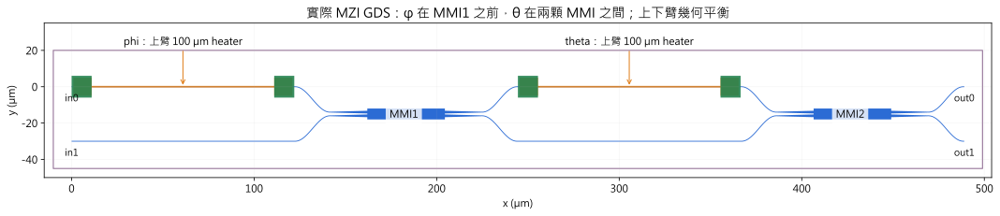
圖 1｜實際 GDS 多邊形。藍色是 Si、橘色是 HT、綠色是局部金屬接觸。上下臂波導幾何平衡；heater 是否產生指定相位仍待校正。 x0 = layer * column_length
y0 = -upper_mode * pitch
# 每顆 MZI 的局部 port 0 是上路：
in0 -> phi -> PDK MMI1:in2
in1 -> PDK MMI1:in1
MMI1:out2 -> theta -> MMI2:in2
MMI1:out1 ---------> MMI2:in1
out0 <- MMI2:out2
out1 <- MMI2:out1本輪 PDK MMI 的實體縱向跨度為 82.5 µm。程式從 mmi.Layout().ports 查座標，再平移放置；八個局部接點的最大中心線座標差為 3.553e-15 µm。連續餘弦曲線的解析最小曲率半徑為 5.230883 µm，大於規劃值 5 µm。這是連續中心線檢查，不能把 1 nm 格點後的三點曲率當成可靠的製程驗證。
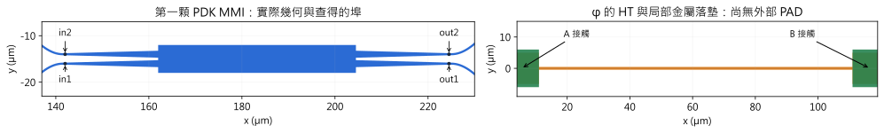
圖 2｜左圖核對 PDK 上下埠；右圖顯示 A／B 局部接觸幾何。它們尚未接到外部驅動 PAD 或 GND。 4．由 OPS 放置七顆 MZI，空位補直通 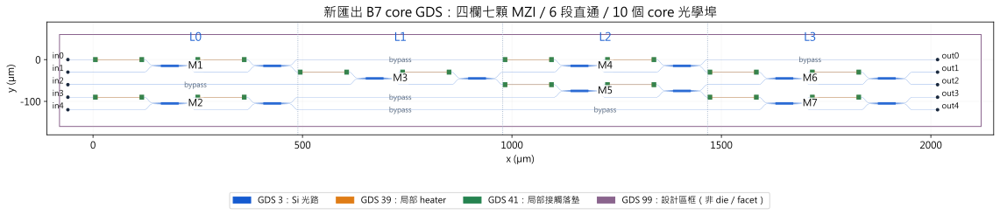
圖 3｜由本輪 b7_core.gds 回讀的多邊形繪製，欄位與 M1～M7 標註由同輪 placement 表加入。紫框是宣告設計區。 每個欄界的五條軌道都必須連續；省略直通線會改變 B7。七顆 MZI 共用一份單元，GDS 階層包含 7 個單元引用；每個單元有 2 個 MMI，因此展開後有 14 顆 MMI，不是 14 個不同的 MMI cell 定義。
5．埠位、heater 與長度交接 θ1～7／φ1～7 依名稱對應到十四個區域。相位區與 A／B 接觸座標 CSV 按 M1 向量順序輸出；heater 中心不是外部 PAD。光學埠位 CSV 與 58 段長度 CSV 由同一份 幾何資訊 JSON 產生。
長度不等於已驗證的光學相位： 本輪每顆 MZI 上／下臂的單模波導總長均為 345.132918 µm；MMI 之間上／下臂均為 172.566459 µm。這些長度不包含多模 MMI 內部傳播；不能把 MMI 的 x 跨度直接乘單模 β。MZI 單模光路與旁路長度不同，整個網路仍需回註相對傳播相位。M2 S2 的 80/80 是零長度接線電路基準，不是這份實體版圖的真值驗收。
互動核對：從相位名稱找到實際區域與接觸座標 MZI 實例 M1 M2 M3 M4 M5 M6 M7 局部相位 theta phi 沿用 M1 相位程式（rad，尚非偏壓） AND2 OR2 XOR2 AND4 OR4
放大圖使用本輪單元 GDS 多邊形；七顆共用此單元，以下列出所選實例在 core 的實際座標。相位程式只作通道交叉核對。
6．執行、匯出與 KLayout 回讀 Set-Location -LiteralPath 'C:\EDA_Codex\Lab06b'
& .\scripts\run_m2_s3.ps1
# 在 KLayout 開啟 work\m2_s3\out\b7_core.gds
# 選 LAB06B_B7_CORE，展開階層檢查七顆單元。參數在 config/m2_core_layout.json ，以 SHA-256 綁定原始 M1 規格；core_layout.py 建構幾何。輸出使用既有 get_default_view(LayoutView)，避免重新建立空白 LayoutCell view。匯出後呼叫另一個 KLayout 程序讀取磁碟上的 GDS。
7．本步核對結果與限制 三種負例只改檢核用的座標副本（埠、MZI 原點或局部接點各偏移 1 µm），正式 GDS 與正式 sidecar 未被修改。此實驗證明回讀器能發現圖形與座標資料不一致，不代表已涵蓋所有可能的 GDS 缺陷。負例結果 。
下一步 M2 S4： 在 KLayout 依清單檢查埠序、彎道、間距與交叉，記錄修改前後圖，再進入 EC／PAD 與 GND 配置。
API 參考：Luceda：MMI 元件版圖與 GDS 輸出 。線上文件為較新版本；本輪以本機 IPKISS 實跑及 GDS 回讀為準。S 彎沿用 M0 工具鏈的餘弦折線做法，沒有套用較新版本才提供的路由器。
本章由現行 C 版本的 M2 S3 技術內容整合；原始證據與程式可沿內文連結核對。整合報告不會重新執行該步 EDA／數值求解。
M2 S4 · 我的實作紀錄
KLayout 檢視與修改記錄 我做了什麼，得到什麼結論 我保留 S3 初版，檢視 MMI 接點、S 彎、heater 與金屬，將 S 彎規劃長度調為 24 µm，再回讀修改後的 core 與負例。
採用版 core 光學跨度為 2140×120 µm，宣告外框 2200×220 µm，連續解析最小曲率半徑約 7.665199 µm。我把修改前後 GDS、幾何描述與圖像一起保存。
原始執行紀錄：2026-10-31T12:03:49.722246+08:00 · 本步原始證據 · 分頁閱讀
本輪結論： 檢視與修改記錄核對通過，採用裕量改善版 core。S 彎水平長 20 → 24 µm，連續解析最小曲率半徑 5.230883 → 7.665199 µm；水平光學跨度 2076 → 2140 µm。原 S3 GDS 與 M1 規格／相位未改。
1．本步目標：把「看起來可以」變成可追溯的檢視記錄 建議 60 分鐘：載入 GDS 與圖層 10 分、逐項檢視 20 分、比較修改 15 分、確認交接與記錄 15 分。前置：M2 S3 初版 core 與 GDS 。
核對埠序、四欄七顆實例與六段直通，追蹤 out1 正／out3 負的接收角色。 放大 MMI 接縫與 S 彎，分層看 Si、HT、局部金屬，記錄數值與來源。 評估幾何裕量與面積代價，修改 Python 參數後重出 GDS，保存修改前後。 將仍未完成的 EC、外部 PAD／共地、完整 DRC／LVS 與相位回註明確留給後關。 2．為何修改？這是裕量改善，並非把合格版說成違規 原版已符合既有規劃值： S3 的連續解析 Rmin 約 5.23 µm，高於 5 µm。本課程額外採 7.5 µm 作幾何裕量目標，因此延長 S 彎。7.5 µm 是本步的教學設計選擇，沒有宣稱它是新的 foundry 規則，也未驗證彎曲損耗或製程良率改善。
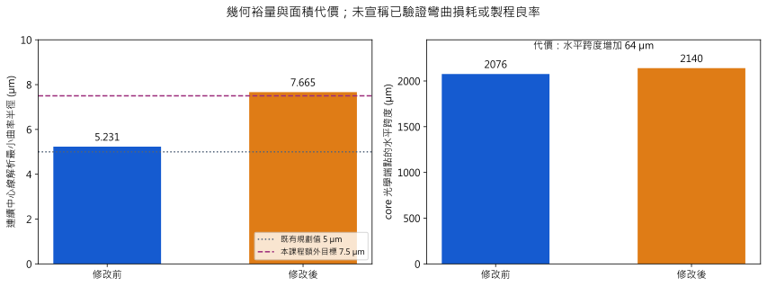
圖 1｜幾何裕量增加的代價是 core 光學端點水平跨度增加 64 µm。既有 2200 × 220 µm 設計區仍可容納新版，外框沒有加大。 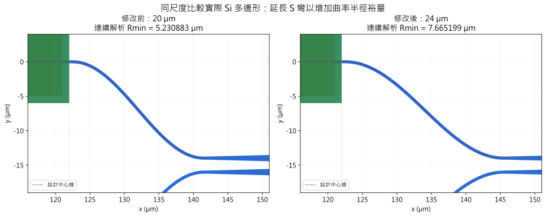
圖 2｜以 KLayout 回讀的 Si 多邊形作同尺度比較；虛線是產生版圖的中心線。解析曲率針對連續餘弦設計，不把 1 nm 格點後的三點曲率當作可靠量測。 只改 新版幾何設定 的 S 彎長；41 點取樣、30 µm 軌道間距、MMI 標準元件、heater 尺寸與十四個相位通道名稱維持。S3 原設定與原結果均保留。完整修改指標 CSV 。
3．用 KLayout 分層、放大與比較 本輪以 KLayout 的 LayoutView 載入磁碟上的實際 GDS，呼叫 zoom_box 與 save_image 匯出原生視圖；以下不是手畫示意圖。顏色：Si／GDS 3 藍色、HT／39 橘色、局部金屬／41 綠色。視圖隱藏 99 設計區與 100 文字層，以免填色覆蓋光路；原 GDS 仍保留這兩層。
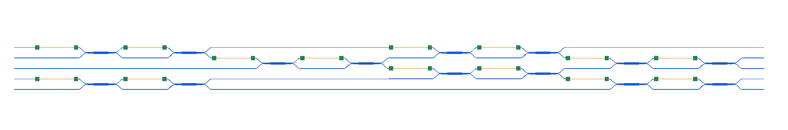
圖 3｜修改後 core 原生視圖；完整幾何、單位與埠位以 GDS／sidecar 為準。版圖檢視仍需同時對照 M1 拓樸。 原生視圖檢查器：同一個視窗範圍比較兩版 版次 修改前：S3 20 µm S 彎 修改後：24 µm S 彎 檢視位置 整個 core 第一個輸入 S 彎 第一顆 MMI 與接縫 φ heater 與局部落墊 可見圖層 Si＋HT＋金屬 只有 Si 只有 HT＋金屬
MMI 區域只有 Si；切到 HT＋金屬時空白是正確結果。顯示圖層空白不代表載入失敗，也不代表該區域沒有其他層。
學員在 KLayout 需要親自做的操作 開啟 out/after/b7_core.gds，選 LAB06B_B7_CORE，再展開至葉節點；另開 before 版作比較。 載入同資料夾的 review_layers.lyp，先只顯示 GDS 3，核對 MMI in2／out2 為上路，以及十個端點的上下順序。 放大第一個 S 彎與 MMI 接縫；以相同視窗與倍率比較兩版，切換 HT／金屬後確認局部接觸的位置。 顯示 99 設計區與 100 文字層作位置核對，避免將框當成 die／EC 端面。保存自己的截圖與量測記錄。 4．逐項檢視記錄：通過與待辦分開 局部 HT 及金屬接觸之間的距離以 KLayout isolated_check 做 1 nm 二分界定；修改後 HT 最小間距落在 50.000～50.001 µm，局部金屬為 48.000～48.001 µm。這些是不同連通區之間的幾何間距，不是熱串擾或電氣隔離性能。
另核對兩版各 81 個接點小區域，以及各 4850 個路徑取樣。中心線頂點與每一段中點使用 2 nm 方框；物理端面處先沿路徑往內 10 nm，避免方框故意跨出端面。中心線兩兩交集的分析來自產生幾何時的 sidecar，沒有冒充完整 GDS 拓樸抽取。
尚不能據此宣稱： 完整 foundry DRC／LVS 通過、EC／外部 PAD／GND 已接完、heater 已校正、光學彎曲損耗已量測，或新版實體光路已通過 80 筆。這些仍待後續關卡驗證。
5．用真正的錯誤 GDS 測試篩查器 每個負例先寫成獨立 GDS，再由 KLayout 回讀篩查；負例位於本步的 work/controlled_gds，未列入採用版 GDS。窄線測試檢查 layer3_width，過近接觸檢查 layer41_space，斷口檢查路徑取樣。它們不涵蓋所有可能的錯誤。
6．修改後哪些交接資料必須更新？ 五個輸出埠向右移 64 µm，輸入埠不動；12／14 個 heater 中心的 x 座標改變。十四個通道名稱及正／負接收角色保留，但後續 EC／PAD 扇出必須讀新版座標。所有單模波導的長度變化都有記錄；相位程式沒有因本步幾何修改而重新優化。
7．完整重跑方式與檢核 Set-Location -LiteralPath 'C:\EDA_Codex\Lab06b'
& .\scripts\run_m2_s4.ps1Runner 保存 S3 基準副本、建立修改版、呼叫 KLayout 回讀與原生視圖匯出，再執行中心線分析、輸出變更表及重建教材。136／136 項既有回歸通過；其中 M2 S3 的 12 項幾何測試在新版參數下重跑。M1 原規格、相位與 ZIP 雜湊未變，基準仍重播 80/80；這不是新版版圖的真值驗收。
建構與 KLayout 呼叫 · 原生視圖與局部篩查 · 中心線交集分析 · 決策與變更表 。
下一步 M2 S5： 從目前採用版索引載入 reviewed core，配置 EC 光學 I/O、heater PAD 與 GND，建立 PAD↔heater↔θ／φ 對照表。
API 參考：KLayout LayoutView 、KLayout Region 。線上文件可能較新；本輪以安裝的 KLayout 0.30.12 實跑為準。
本章由現行 C 版本的 M2 S4 技術內容整合；原始證據與程式可沿內文連結核對。整合報告不會重新執行該步 EDA／數值求解。
M2 S5 · 我的實作紀錄
EC 光學 I/O、heater PAD 與 GND 我做了什麼，得到什麼結論 我把採用 core 與十個參考 EC、十條 fan route、十四個訊號 PAD、兩個共地 PAD 及共地走線合併，輸出三份實際接口表。
晶片宣告區域為 3860×1640 µm；金屬是 14 訊號網加 1 共地網。已安裝匯出命名空間未找到可用的 qualified EC，因此我使用實際圖層上的參考 taper 幾何，耦合響應仍待校準。
原始執行紀錄：原始紀錄未提供統一時間欄位 · 本步原始證據 · 分頁閱讀
本輪成果： 10 個參考 EC、14 個訊號 PAD、2 個 GND PAD；初版設計區 3860 × 1640 µm。KLayout 從實際 GDS 回讀得到 14 個獨立訊號金屬網＋1 個共地網；十四個 heater 各接到自己的訊號與 GND。
1．我的目標：把 core 接到光纖與驅動器 建議 90 分鐘：接口與參考面 15 分、EC／光學扇出 20 分、PAD／共地 25 分、回讀與對照 20 分、記錄 10 分。前置：S1 邊界與 I/O 、S4 採用版 core 。
先預測 10 個光學埠的去向，以及 14 路相位驅動與 GND 對應多少個實體 PAD。 由目前採用版 core 的 GDS 加入 EC、光學扇出與電氣接口，不重新改造 core 軌距或 heater 位置。 逐一追蹤外部 DRV → PAD → heater A／B → GND PAD → DRV_RETURN。 匯出晶片 GDS 與對照表，再從磁碟檔案回讀幾何及指定連通關係。 2．完整介面配置與範圍 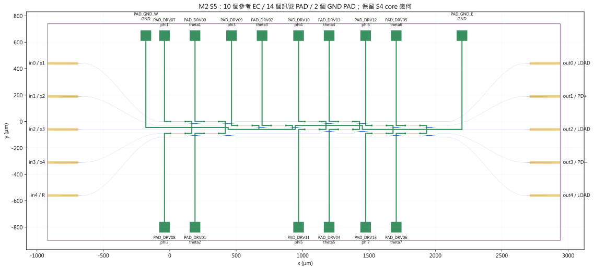
圖 1｜以 KLayout 回讀的多邊形繪製。上方有 8 個訊號 PAD＋2 個 GND PAD，下方有 6 個訊號 PAD。外框是本步設計區與名義端面位置，未代表已完成切割、封裝或製程簽核。 程式先核對 S4 採用版索引 的 SHA-256，再把原 GDS 階層複製到新晶片中。KLayout 對內嵌 core 的 GDS 3／39／41／99／100 做 XOR 比較，皆無幾何差異；原檔與原設定也保留。新增介面參數位於 m2_chip_interfaces.json ，本步採用索引為 m2_current_chip.json 。
3．EC 是參考幾何，不能直接當作已驗證耦合器 本機 PDK 查核結果： 未在已安裝 CORNERSTONE 的匯出介面找到可直接使用的標準 EC cell。本步依課程原始參考做 thin-Si taper 幾何，使用本機 PDK 的實際圖層映射；沒有建立經量測或電磁模擬驗證的 EC compact model。耦合損耗與相位響應均保持 pending，未宣稱特定光纖型號或耦合效率。
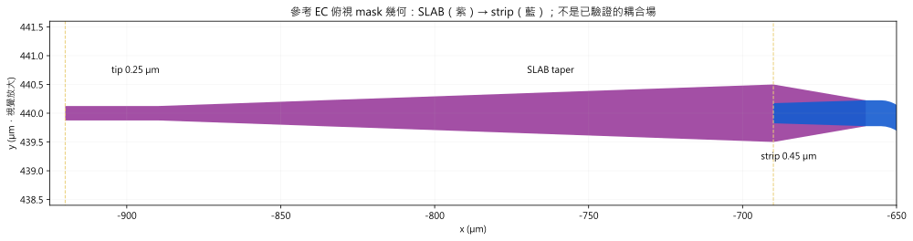
圖 2｜俯視幾何的縱軸放大，以便辨識 tip 與各層。名義 220 nm Si、120 nm rib 蝕刻可留下 100 nm Si；此堆疊說明不替代製程窗口、模式轉換及切割端面的驗證。參考 Lab01a §7.6 光場分析 理解為何幾何相接仍需光場驗證。 本機 EC／圖層稽核 JSON 。十段光學扇出共核對 8030 個中心線頂點／線段中點小區域；長度另列 fan_lengths.csv ，供後續損耗與相位回註。
參考面要保留： M1 的 data=1 場振幅 1、R 場振幅 3／功率 9，定義在 core 輸入面，並非雷射端或光纖端的功率。不同 EC 與扇出會帶來不同複數傳輸，未校正前不能假設光纖端直接設定 R=3 就能維持原真值表。out1／out3 經輸出路徑與接收器後，仍需回推到等效 core 功率差。
4．14 個驅動 PAD＋2 個 GND PAD S1 的 14 路驅動＋1 個邏輯共地角色，在本步實作成 16 個實體 PAD：14 個訊號、2 個同網 GND。兩個 GND PAD 不是兩條獨立回路，也沒有因此驗證共地壓降或熱串擾。PAD 為 80 × 80 µm，走線寬 8 µm。
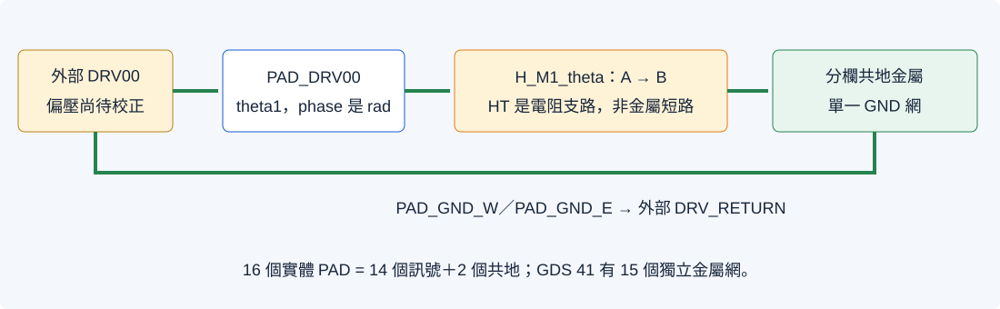
圖 3｜每個 heater 是有意義的電阻支路。只看 GDS 41 金屬時應有 15 個網；不能把 HT 電阻也當成理想金屬一起合併，再把整個電阻網路判成訊號短路。 完整 PAD 對照 CSV 包含每個 PAD、heater 中心與 A／B 接觸座標，按 θ1～7、φ1～7 向量順序輸出。相位值由通道名稱映射，沒有誤當成 θφ 交錯排列；偏壓校正欄位仍是 pending。
5．保留 core，以分欄轉折的 GND 配線避開訊號 core 只有 30 µm 軌距，局部接觸占用一部分垂直空間。這裡依四欄 heater 的位置選擇不同回地 y，並在欄界前轉折；沒有將 core 改成另一個軌距。訊號由 A 接觸向上／下外圍 PAD，B 接觸則向欄內共地走線。
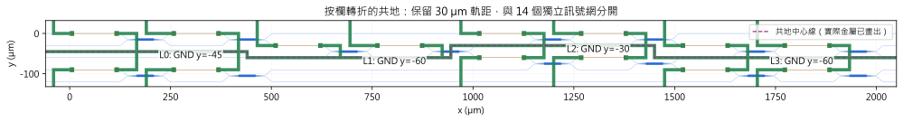
圖 4｜紫虛線只標出已存在金屬的共地中心線。Si 與金屬在俯視圖的交疊屬不同製程層；這不等同同層短路，也不表示已驗證金屬對光學損耗或熱的影響。 逐一追蹤 PAD：相位不是電壓 實體 PAD PAD_DRV00 PAD_DRV01 PAD_DRV02 PAD_DRV03 PAD_DRV04 PAD_DRV05 PAD_DRV06 PAD_DRV07 PAD_DRV08 PAD_DRV09 PAD_DRV10 PAD_DRV11 PAD_DRV12 PAD_DRV13 PAD_GND_W PAD_GND_E 沿用 M1 相位程式 AND2 OR2 XOR2 AND4 OR4
逐一追蹤光學接口：facet → core → 外部設備 光學接口 OPT_IN0 OPT_IN1 OPT_IN2 OPT_IN3 OPT_IN4 OPT_OUT0 OPT_OUT1 OPT_OUT2 OPT_OUT3 OPT_OUT4
6．從實際 GDS 回讀指定連通關係 前兩種負例先產生獨立 GDS、重新讀取，再使用同一份電氣幾何核對器；第三種只交換對照資料中的 A／B。正式晶片 GDS 未被修改。負例結果 · 實際 GDS 回讀結果 。
本步的選定連通檢查不是完整 LVS／製程簽核。 尚需驗證 EC 製程層與模式響應、完整 DRC／連通、切割與封裝條件、heater 電阻／相位→偏壓、共地阻抗／熱串擾，以及光學路徑損耗與相位。沒有在此填入假設的 Vπ、驅動電流或耦合損耗。
7．重跑與交付檔案 Set-Location -LiteralPath 'C:\EDA_Codex\Lab06b'
& .\scripts\run_m2_s5.ps1
# KLayout 開啟 work\m2_s5\out\b7_ec_pad.gds
# top cell：LAB06B_B7_EC_PAD_CHIP
# 載入同資料夾 chip_layers.lyp 作分層檢視。下一步 M2 S6： 從目前採用的晶片 GDS 與對照表執行完整規則／連通檢查，處理並記錄實際違規，再進行最終路徑回註。
技術參考：CORNERSTONE 技術平台 、Luceda CORNERSTONE PDK 文件 、KLayout Cell.copy_tree 。本輪元件可用性與圖層以已安裝 PDK 稽核為準，沒有把其他版本或其他 PDK 的 EC 當成本機元件。
本章由現行 C 版本的 M2 S5 技術內容整合；原始證據與程式可沿內文連結核對。整合報告不會重新執行該步 EDA／數值求解。
M2 S6 · 我的實作紀錄
完整現有規則、幾何接線與修正 我做了什麼，得到什麼結論 我完整執行原始 pre-DRC deck，找到兩筆埠文字間距違規；將十個埠標籤由 4 放大成 5 µm，同 deck 重跑，記錄由 2 筆降為 0 筆。
六個實體圖層 XOR 不變。實際材料抽取確認 15 金屬網、14 heater 支路、66 光學端點與 33 組 MMI 外連接；八種錯誤 GDS 都被抓到，其中四種接錯在 DRC=0 時仍被網表比對拒絕。
原始執行紀錄：2026-10-31T12:55:01.232628+08:00 · 本步原始證據 · 分頁閱讀
本輪結果： 執行現有原始 deck 的全部 31 個報告類別，找到 2 筆 GDS 100 埠標籤間距違規；將十個埠標籤由 4 放大為 5 µm 後，同一 deck 重跑為 0 筆。六個實體圖層完全不變。
1．本步目標：從違規到修正，再到接線證據 建議 90 分鐘：範圍與 deck 10 分、讀違規 marker 20 分、修正／重跑 15 分、光電網表比對 25 分、負例與交付 20 分。前置：M2 S5 的 EC／PAD／GND 晶片 。
讀清楚 deck 的版本、檢查範圍及設計區參數，保存原始報告。 在 KLayout 以 marker 找到實際問題，修正圖形後重跑相同規則。 把實際幾何抽取出的接線，對照 M1 的 B7 拓樸與 S1／S5 電氣定義。 以已知錯誤副本確認檢查器能抓到短路、斷口與跨接；留下未驗證項。 2．「完整執行現有 deck」的精確範圍 原始 deck 自身註明這是 pre-DRC： CORNERSTONE v3.1、2025-03-03 版本；完整 foundry DRC 由 CORNERSTONE 團隊處理。本步執行整份已安裝 deck，沒有放寬門檻、刪除錯誤項或隱藏圖層，但結果不等於 foundry 完整簽核。
3．先讀兩筆真實違規，再修正圖形 兩筆都位於 core 的 in0／out0 小字形附近。S5 的局部規則只篩查 Si／HT／金屬，沒有檢查 GDS 100 文字，因此這次全 deck 才發現問題。修改前原始 .lyrdb · 違規 CSV 。
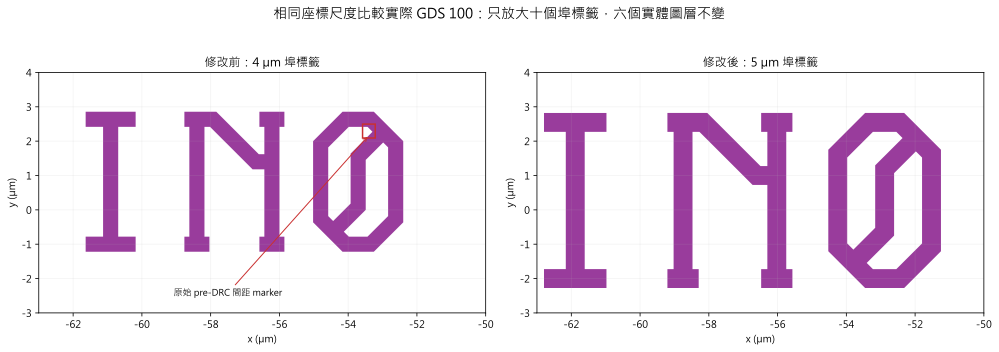
圖 1｜紅框來自原始 report 的 edge-pair 座標；只放大字形，沒有移動光路、heater、PAD 或回地走線。 修正設定為 port_label_scale=1.25 。程式在十個原埠標籤的局部視窗內，以各自原錨點放大字形，輸出仍對齊 1 nm。原 S5 GDS 保留；新 GDS 的 GDS 3／4／5／39／41／99 XOR 比較全空，GDS 100 的變化也只在這十個標籤視窗內。
修改後原始 .lyrdb · 全部類別前後 CSV · 零違規 CSV（保留欄名） · 修正記錄 。
KLayout 原生視圖：in0 埠標籤 修改前：GDS 100 紫色字形、GDS 3 藍色波導。 修改後：相同請求視窗，標籤由 4 放大為 5 µm。 4．電氣幾何網表：15 網與 14 個 heater 支路 先對 GDS 41 做精確合併，得到 15 個金屬連通區；以實際 PAD 中心、A／B 接觸及 HT 區域比對對照表。十四個訊號 PAD 各落在自己的網，兩個 GND PAD 在同一網。每個 heater 的 HT 區只能接觸自己的訊號與 GND 這兩網。
這裡將 HT 當作有意義的電阻支路，而非直接與金屬合併成短路。比對沒有填入未知 heater 電阻、Vπ、寄生或共地壓降。電氣接線 CSV · 完整幾何網表比對 JSON 。
5．光學幾何網表：切開 MMI 黑盒後比對 33 組接線 把整片 Si 直接做 union，會透過 MMI 多模區接成大區塊，無法表示真正的多埠接線。因此本步先找到實際階層中的 7 顆 MZI 與 14 顆 MMI，扣除 MMI 本體幾何，再把外部材料連通區對照宣告網表。
14 MMI × 4 個幾何端點 + 10 個 EC facet = 66 個端點
66 個端點 ÷ 每條連接 2 個端點 = 33 條外部連接
33 = 14 條 MZI 內部臂連接 + 19 條 B7／外部 I/O 連接期望網表由原 M1 規格的實例／模式順序產生；觀察網表則從實際 GDS 材料區取得，不用產生中心線的 sidecar 代替抽取。每個 MMI 的幾何與其餘同型元件一致，接點也做覆蓋核對。MMI 混光、EC 模式轉換與複數相位仍屬不同層次的光學模型驗證。
檢視 33 條光學接線 01 · EC_IN0:facet ↔ M1:MMI1:in2 02 · EC_IN1:facet ↔ M1:MMI1:in1 03 · EC_IN2:facet ↔ M3:MMI1:in1 04 · EC_IN3:facet ↔ M2:MMI1:in2 05 · EC_IN4:facet ↔ M2:MMI1:in1 06 · EC_OUT0:facet ↔ M4:MMI2:out2 07 · EC_OUT1:facet ↔ M6:MMI2:out2 08 · EC_OUT2:facet ↔ M6:MMI2:out1 09 · EC_OUT3:facet ↔ M7:MMI2:out2 10 · EC_OUT4:facet ↔ M7:MMI2:out1 11 · M1:MMI1:out1 ↔ M1:MMI2:in1 12 · M1:MMI1:out2 ↔ M1:MMI2:in2 13 · M1:MMI2:out1 ↔ M3:MMI1:in2 14 · M1:MMI2:out2 ↔ M4:MMI1:in2 15 · M2:MMI1:out1 ↔ M2:MMI2:in1 16 · M2:MMI1:out2 ↔ M2:MMI2:in2 17 · M2:MMI2:out1 ↔ M7:MMI1:in1 18 · M2:MMI2:out2 ↔ M5:MMI1:in1 19 · M3:MMI1:out1 ↔ M3:MMI2:in1 20 · M3:MMI1:out2 ↔ M3:MMI2:in2 21 · M3:MMI2:out1 ↔ M5:MMI1:in2 22 · M3:MMI2:out2 ↔ M4:MMI1:in1 23 · M4:MMI1:out1 ↔ M4:MMI2:in1 24 · M4:MMI1:out2 ↔ M4:MMI2:in2 25 · M4:MMI2:out1 ↔ M6:MMI1:in2 26 · M5:MMI1:out1 ↔ M5:MMI2:in1 27 · M5:MMI1:out2 ↔ M5:MMI2:in2 28 · M5:MMI2:out1 ↔ M7:MMI1:in2 29 · M5:MMI2:out2 ↔ M6:MMI1:in1 30 · M6:MMI1:out1 ↔ M6:MMI2:in1 31 · M6:MMI1:out2 ↔ M6:MMI2:in2 32 · M7:MMI1:out1 ↔ M7:MMI2:in1 33 · M7:MMI1:out2 ↔ M7:MMI2:in2
全部光學連接 CSV 。33 條外部連接不是 5×5 傳輸矩陣的 25 個係數；這一關驗證幾何拓樸，沒有以幾何相接宣稱模式或相位驗證。
6．八種真實錯誤 GDS：DRC 零筆仍可能接錯 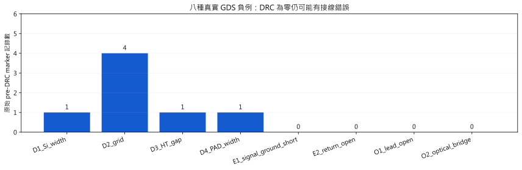
圖 2｜訊號短路、回地斷路、光路斷口與橋接的 DRC 都是零筆，但網表比對失敗。只有規則篩查，無法證明功能接線正確。 負例存在隔離的 work/m2_s6/work/faults，沒有列入採用版；控制案例 CSV 與 完整結果 JSON 記錄各檢查的實際反應。這八種負例不是對整份 deck 所有規則的完整覆蓋。
比對正式版與負例的判讀 案例 正式修正版 正式修改前 Si 窄線 0.2 µm 0.5 nm 偏移的格點錯誤 HT 間距不足 PAD 金屬線寬不足 訊號接到 GND heater 回地斷路 in0 光路斷口 in0／in1 非預期光學橋接
7．重跑、違規記錄與採用版 Set-Location -LiteralPath 'C:\EDA_Codex\Lab06b'
& .\scripts\run_m2_s6.ps1
# KLayout 開啟 out\before 與 out\after 的 b7_ec_pad.gds。
# 在 Marker Database Browser 載入各自的 pre_drc.lyrdb。
# 選 GDS100 gap 類別，再對照 marker 的 cell 與座標。144 項既有回歸通過；M1 規格／相位與交接 ZIP 未改，原基準仍重播 80/80。修正版的物理介面與 PAD 座標沒有改動，S5 sidecar／CSV 以原位元承接；字形修改並未被當成光學相位回註。
8．還有哪些驗證不能被打勾？ foundry 完整簽核與專用製程 LVS／寄生抽取：本步只有現有 pre-DRC 與自訂幾何網表比對。 EC 製程／模式轉換、耦合效率、光纖與切割／封裝條件。 heater 相位→偏壓、電阻、共地阻抗、熱串擾及穩定度。 實際路徑的複數傳輸、相位回註及五功能 80 筆物理光路驗收。 下一步 M2 S7： 交付封裝、路徑回註與重播；承接本步修正版與完整資格邊界。
技術參考：KLayout DRC 、KLayout LVS 與網表比對概念 。本步使用安裝的 0.30.12 與本機原始 pre-DRC deck；光學比對是此課程的幾何黑盒方法。
本章由現行 C 版本的 M2 S6 技術內容整合；原始證據與程式可沿內文連結核對。整合報告不會重新執行該步 EDA／數值求解。
M2 S7 · 我的實作紀錄
交付封裝、路徑回註與重播 我做了什麼，得到什麼結論 我將 58 段 core 與 10 段 fan 的名義中心線對照到 33 個實際 GDS 連通區，在 M1 core 參考面加入 exp(+iβL)，再重播原相位。
結果由理想 80/80 降為 53/80。我以逐軌相位追蹤解析推導補償，另存模型候選後回到 80/80；沒有用真值重新擬合。50 檔案交付包在中文／空白路徑搬移後，400 筆與幾何／pre-DRC 重播一致。
原始執行紀錄：2026-10-31T13:39:35.729371+08:00 · 本步原始證據 · 分頁閱讀
本輪交付： 沿用 S6 採用版 GDS，封裝規格、原始／候選相位、接口表、路徑、原始報告與 SHA-256 清單；搬到含中文及空白的新路徑後，400 筆比較與幾何／現有 pre-DRC 重播一致。功能判讀： 理想基準 80/80 → 線長回註後原設定 53/80 → 解析模型補償後 80/80。這是有明確假設的 core 端教學模型，實體晶片光學功能尚未驗證。
1．本步目標與我的操作 建議 60 分鐘：辨識交付版本 10 分、追蹤線長與參考面 15 分、比較原相位／模型候選 15 分、搬移重播與交付 20 分。前置：M2 S6 規則／幾何連通證據 。
從索引定位 S6 採用晶片，核對封裝 GDS 位元一致。 從 68 段中心線追到 33 條實際 GDS 連接，辨識 core 與 EC fan 的參考面。 先看原始相位回註後失敗的案例，再推導相位補償，保留原相位不變。 將 ZIP 解壓到新位置，核對完整性並重播；記錄軟體、結果與尚未驗證事項。 2．交付包與版本鏈 下載 M2 PIC 設計交付 ZIP 封裝 manifest · 使用說明 · S6 晶片採用索引 。
manifest 列出 50 個內容檔；ZIP 另含 manifest 本身。GDS SHA-256：0a8bece1fddd9e10a5cac8369ac57259f5775735b4f5ef6758ab76ceddc23963。ZIP SHA-256：df8188958e9629f9a65960a2e308d43641846b9bdadf33eb7f34b4c7a242baa3。SHA 可檢查位元與版本一致性；這份清單不是數位簽章。
圖 1｜從採用 GDS 以 KLayout 原生繪出；GDS 99 外框層隱藏以看清實體圖形。S7 封裝不改 S6 晶片。 3．路徑回註：68 段中心線不是 68 條獨立光路 沿用已綁定雜湊的 S4／S5 sidecar，把 1 nm 格點中心線逐段重算長度，再以路徑中點歸屬到 S6 實際 GDS 的材料連通區。實際接線仍採 S6 的 MMI 黑盒切分方式，66 個端點形成 33 個連通區；名義線長來自中心線，不能把這個程序稱為經製程校準的光學 PEX。
58 段 core = 7 MZI × 6 波導 + 6 bypass + 10 core lead
68 段總路徑 = 58 core + 10 EC fan
33 條 GDS 連接 = 14 MZI 內臂 + 19 其餘外部連接
EC taper 與 MMI 本體不計入這些中心線長度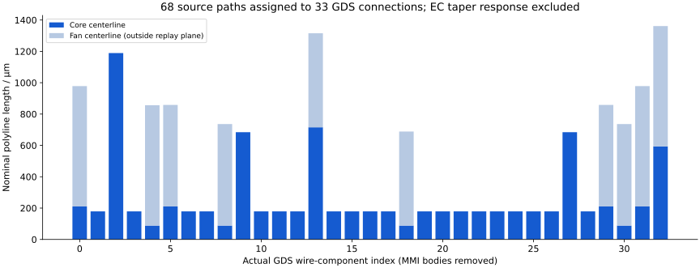
圖 2｜一條 GDS 連接可能合併多段中心線。淺色 fan 已列入交付線長表，但在 M1 core 參考面之外，不加入本輪傳輸矩陣。 檢視 68 段路徑 M1:WG0 · 150.578 µm M1:WG1 · 150.578 µm M1:WG2 · 179.156 µm M1:WG3 · 179.156 µm M1:WG4 · 28.578 µm M1:WG5 · 28.578 µm M2:WG0 · 150.578 µm M2:WG1 · 150.578 µm M2:WG2 · 179.156 µm M2:WG3 · 179.156 µm M2:WG4 · 28.578 µm M2:WG5 · 28.578 µm M3:WG0 · 150.578 µm M3:WG1 · 150.578 µm M3:WG2 · 179.156 µm M3:WG3 · 179.156 µm M3:WG4 · 28.578 µm M3:WG5 · 28.578 µm M4:WG0 · 150.578 µm M4:WG1 · 150.578 µm M4:WG2 · 179.156 µm M4:WG3 · 179.156 µm M4:WG4 · 28.578 µm M4:WG5 · 28.578 µm M5:WG0 · 150.578 µm M5:WG1 · 150.578 µm M5:WG2 · 179.156 µm M5:WG3 · 179.156 µm M5:WG4 · 28.578 µm M5:WG5 · 28.578 µm M6:WG0 · 150.578 µm M6:WG1 · 150.578 µm M6:WG2 · 179.156 µm M6:WG3 · 179.156 µm M6:WG4 · 28.578 µm M6:WG5 · 28.578 µm M7:WG0 · 150.578 µm M7:WG1 · 150.578 µm M7:WG2 · 179.156 µm M7:WG3 · 179.156 µm M7:WG4 · 28.578 µm M7:WG5 · 28.578 µm WG_BYP_L0_R2 · 505.000 µm WG_BYP_L1_R0 · 505.000 µm WG_BYP_L1_R3 · 505.000 µm WG_BYP_L1_R4 · 505.000 µm WG_BYP_L2_R4 · 505.000 µm WG_BYP_L3_R0 · 505.000 µm WG_in0 · 60.000 µm WG_out0 · 60.000 µm WG_in1 · 60.000 µm WG_out1 · 60.000 µm WG_in2 · 60.000 µm WG_out2 · 60.000 µm WG_in3 · 60.000 µm WG_out3 · 60.000 µm WG_in4 · 60.000 µm WG_out4 · 60.000 µm FAN_in0 · 767.861 µm FAN_out0 · 767.861 µm FAN_in1 · 647.741 µm FAN_out1 · 647.741 µm FAN_in2 · 600.000 µm FAN_out2 · 600.000 µm FAN_in3 · 647.741 µm FAN_out3 · 647.741 µm FAN_in4 · 767.861 µm FAN_out4 · 767.861 µm
完整綁定／路徑 JSON · 68 段 CSV · 33 連接 CSV 。
4．先固定參考面、相位與單位 T_MZI = D_post · H · D_inter · P(theta) · H · D_pre · P(phi)
P(a) = diag(exp(i a), 1)
依 B7 層次串接，包含 bypass 與 core lead；保留全部複數相位。5．回註後先比較失敗，再另存模型補償 將原 M1 相位直接套入線長傳播，只有 53/80 通過。不能拿理想基準的 80/80 代替這次回註結果。每個 MZI 以進入兩軌的相位與前段長差推導 φ 偏移，以兩內臂長差推導 θ 偏移；這是幾何與模型的解析相位追蹤，不使用真值標籤重新擬合。候選相位另存，沒有覆寫 phase_settings.json。
Δφ = −(a_upper − a_lower) − β(L_pre,upper − L_pre,lower)
Δθ = −β(L_inter,upper − L_inter,lower)
候選 = 原 M1 相位 + 偏移（mod 2π）；追蹤其餘軌與 bypass 的共同相位。
U_candidate = diag(exp(i δ_out)) · U_ideal
輸出各軌僅差相位時，各軌功率相同；候選仍不是 heater 偏壓。完整複數矩陣的相位規範等式最大誤差 4.83e-12 ；12 項新模型測試、144 項既有回歸通過。無損能量守恆與有損被動性亦核對通過。損耗情境候選仍 80/80，但最小 margin 從 0.25 降至約 0.222；這些結果沒有建立實際製程容差。
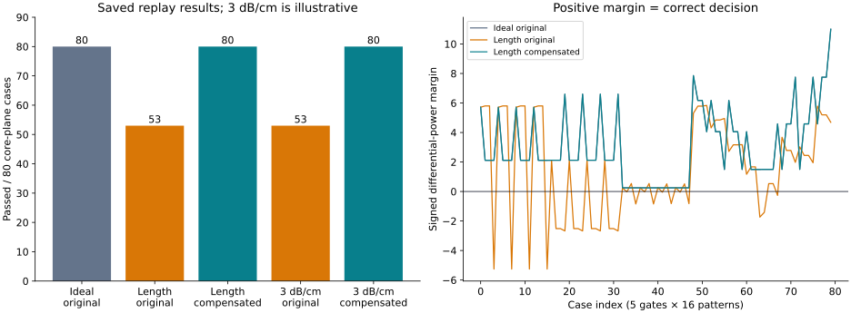
圖 3｜原設定的線長回註錯誤必須留下；補償 80/80 的適用範圍由模型定義。 模型情境 理想原始基準 線長＋原始相位 線長＋模型補償 3 dB/cm＋原始相位 3 dB/cm＋模型補償 邏輯功能 AND2 OR2 XOR2 AND4 OR4 輸入順序 x1 x2 x3 x4（x1 為 index 的最低位） 0000 1000 0100 1100 0010 1010 0110 1110 0001 1001 0101 1101 0011 1011 0111 1111
差分 Δ=P(out1)−P(out3)，正為 1、負為 0；|Δ|≤10⁻¹⁰ 為邊界。signed margin=(2×真值−1)Δ，正值才在正確一側。功率為與 M1 一致的正規化值，未換算光纖 mW。
400 筆 CSV · 完整複數矩陣與結果 · 模型候選相位（rad，非電壓） 。
6．凍結候選的折射率擾動 只在名義 n_eff 推導一次候選相位，之後凍結設定，對七個 Δn_eff 點重播。這些點的候選均為 80/80，但最小 margin 在兩端降到約 0.0835 與 0.0822。這是均勻 n_eff 的示範擾動，沒有逐點重調相位，也不代表實際線寬／厚度／溫度容差或波長頻寬。
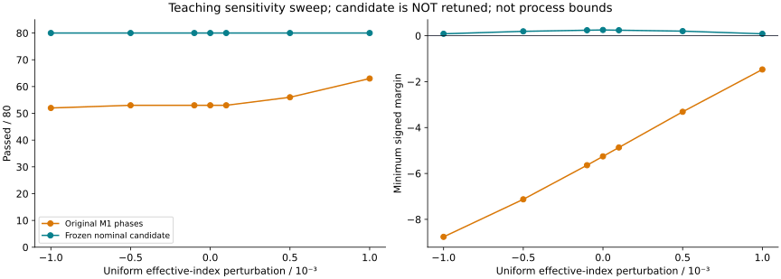
圖 4｜功能通過數相同，margin 仍會改變。若要判斷製程良率，還需要局部與相關變異的校準模型。 7．解壓到新路徑，驗證與重播 先將 ZIP 解壓到 C:\EDA_Codex 下另一個資料夾，再用數值 Python 執行。以下命令只依賴解壓後的包內路徑；腳本會以自己的位置找資料。重播需要 NumPy（本輪 1.26.4），不需要載入 IPKISS／PDK。
# 在「解壓後」資料夾執行
& 'C:\luceda\luceda_2026033\envs\device_sim\python.exe' .\verify_delivery.py
& 'C:\luceda\luceda_2026033\envs\device_sim\python.exe' .\replay_delivery.py --out .\my_replay
# 如要重查幾何，另提供已安裝 KLayout 與相同 SHA 的外部 deck：
& 'C:\luceda\luceda_2026033\envs\device_sim\python.exe' .\recheck_geometry.py `
--klayout 'C:\EDA_Codex\Lab06b\tools\KLayout\klayout-0.30.12-win64\klayout_app.exe' `
--deck 'C:\EDA_Codex\Lab06b\work\common\drc\cornerstone_Si220_passive.lydrc' --out .\my_geometry
# 從正式專案重做 S7（需要前步輸出與本機環境）：
Set-Location -LiteralPath 'C:\EDA_Codex\Lab06b'
& .\scripts\run_m2_s7.ps1實測搬移到 work/m2_s7/work/relocated package 測試，使用新程序、移除繼承的 Conda 設定，完整性、400 筆數值及外部工具幾何重播均通過。重播最大 |Δ差|=0；pre-DRC 0 筆，金屬 15 網、光學 33 連接。此項是交付包重播；從零建立工具／PDK 並重建 GDS 的獨立驗收留給 M3 S1。
這些副本不放入交付 ZIP。即使重新計算某檔 SHA，模型與候選的交叉綁定、400 案例完整性仍會檢查。搬移／負例／幾何結果 · 12 項模型測試 · 144 項既有回歸 。
8．交付成熟度：哪些可驗收，哪些仍待驗證？
下一步 M3 S1：從零重建與驗收。 由獨立重建流程比對 GDS 雜湊與功能結果，將本步交付包的可重播證據接到完整專案重建。
本章由現行 C 版本的 M2 S7 技術內容整合；原始證據與程式可沿內文連結核對。整合報告不會重新執行該步 EDA／數值求解。
M3｜我重做一次，再換方法檢查 以乾淨來源重建與獨立幾何引擎，確認同一設計、同一問題能得到相同結論。
M3 S1 · 我的實作紀錄
從零重建與一致性檢查 我做了什麼，得到什麼結論 我在兩個空目錄各放 33 個來源、設計與工具設定檔，沒有帶入既有 GDS、sidecar 或 out，重新產生 core、接口、標籤修正版、路徑與重播結果。
兩輪各 13 項條件通過，每輪 400 筆與 S7 數值差為 0。原始 GDS SHA 不同；只統一 44 筆日期 payload 後，其他所有位元與 S6 相同，全圖層 XOR／文字及三份接口 CSV 也一致。
原始執行紀錄：2026-10-31T14:03:43.864865+08:00 · 本步原始證據 · 分頁閱讀
本輪結果： 兩個全新來源目錄各自重建七顆 MZI core、EC／PAD／GND、標籤修正版與路徑模型，均通過 13 個驗收項。原始 GDS 雜湊因時間戳不同而不相同；只統一日期欄位後，與採用版及彼此的 SHA 完全一致。
1．「從零」的起點與學員任務 建議 60 分鐘：辨識輸入 10 分、一鍵重建／讀 log 15 分、雜湊與 XOR 判讀 15 分、功能與驗收清單 20 分。前置：M2 S7 交付封裝與回註 。
本步從沒有生成檔的空目錄 開始，帶入作者設計規格、原始相位、版圖／模型設定與自寫程式，使用本機已安裝且有授權的工具。M1 相位是設計輸入；本步不重新求解相位最佳化、FEM／FDTD，也不從零安裝 Windows、工具或 PDK。重建相同設計與建立新的製程／量測資格是不同的驗收問題。
檢查 seed manifest：沒有 GDS、舊 sidecar、out、ZIP 或歷史報告。 執行兩次互相獨立的來源重建，讀取每階段的命令、回傳碼、耗時及 log。 分別回答「原始位元相同嗎」「除了日期是否相同」「幾何／接線／功能是否相同」。 故意比較時間戳副本與幾何錯誤副本，確認比較器不會把兩者混為一談。 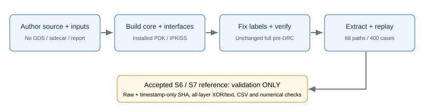
圖 1｜參考檔只用於驗收。新 M1 邏輯交接表、core sidecar、接口、路徑與報告均在乾淨目錄重新生成。 A 的來源清單 · B 的來源清單 · A 執行環境與 PDK 來源 SHA · B 執行環境 。
3．一鍵執行與乾淨目錄政策 Set-Location -LiteralPath 'C:\EDA_Codex\Lab06b'
& .\scripts\run_m3_s1.ps1
# 核心入口：scripts/rebuild_all.py
# 每次建立新識別碼及 A、B 兩個目錄：
# work/m3_s1/work/clean build 測試/<識別碼>/A
# work/m3_s1/work/clean build 測試/<識別碼>/B
# 所有輸出只在 C:\EDA_Codex；已存在的目標一律拒絕重用。每個階段使用新的程序，清空 PYTHONPATH、停用 user site，明示數值／授權環境的 DLL 路徑。共同模型由 staged 來源載入，並核對其位置。軟體仍使用本機授權與已安裝套件，這不是隔離作業系統或容器測試。
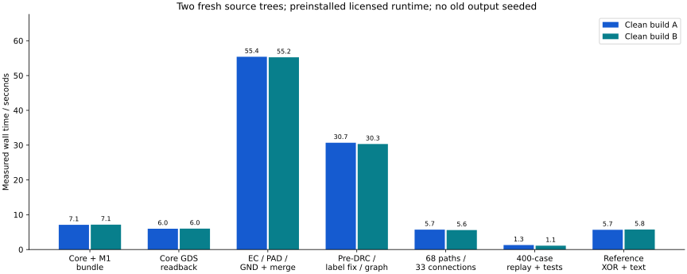
圖 2｜A 工具階段合計 111.8 秒，B 為 111.1 秒；不含來源複製、Python 端比對及報告整理，也不作效能保證。 完整命令／log 索引 · A 接口建置 log · A 規則／接線 log 。
4．原始 SHA 不同：只差日期，還是版圖變了？ GDS 的 BGNLIB／BGNSTR 記錄含建立與修改時間。新輸出保留真實時間，不改寫已採用 GDS。驗收另在記憶體中將這兩種日期記錄的 24-byte payload 統一為 2000-01-01 00:00:00，再計算 SHA；其他位元一律保留。此規則不忽略座標、名稱、文字、圖層或記錄順序。
每份最終 GDS 都有 44 筆日期記錄。三個日期統一後 SHA 相同，代表依此明示規則，除了日期 payload，其餘所有位元相同 ；原始 SHA 不同的事實仍列入報告，沒有宣稱原始檔完全相同。
A 全圖層原始比較 · B 全圖層原始比較 。XOR 比較圖形；另外逐圖層比對文字，避免把文字標籤遺漏在驗收之外。
5．兩輪驗收清單：從原檔到功能 重建輪次 A B 驗收項目 輸入未含既有生成檔 使用本輪暫存來源模組 新 core 的 KLayout 回讀 新 core 幾何描述相同 全圖層 XOR／文字相同 只統一日期後 SHA 相同 三份接口 CSV 位元相同 同 deck、31 類、marker 2→0 15 金屬網／33 光學連接 68 段與 33 組路徑歸屬相同 400 筆離散值與數值相同 重新推導候選相位相同 12 項模型測試通過
每輪 pre-DRC 仍完整執行 31 個報告類別，標籤修正前 2 筆、修正後 0 筆；幾何網表為 15 個金屬網與 33 組光學連接。這些是相同已安裝 pre-DRC 與課程幾何比對，不等於 foundry 完整簽核。
6．原始 80 筆與回註 400 筆都要保留 新產生的 M1 理想交接基準為 80/80。新路徑再做五情境重播：原相位線長回註仍只有 53/80；另行解析推導的模型候選仍 80/80。M3 S1 驗收的是「重建得到相同結論」，不能因可重現就把這個均勻 n_eff 模型升格為實體晶片校準結果。
模型情境 理想原始基準 線長＋原始相位 線長＋模型候選 3 dB/cm＋原始相位 3 dB/cm＋模型候選 功能 AND2 OR2 XOR2 AND4 OR4 輸入 x1 x2 x3 x4（x1 為 index 最低位） 0000 1000 0100 1100 0010 1010 0110 1110 0001 1001 0101 1101 0011 1011 0111 1111
上述輪次選單同時控制功能檢視器；資料讀取本輪新輸出，與 S7 的每個離散值／功率／Δ／margin 逐筆比對。兩輪最大差均為 0；候選相位的最大 rad 差也為 0。每輪 12 項模型測試獨立通過，不重複宣稱先前 144 項回歸是本步重新執行。
A 的 400 筆 CSV · B 的 400 筆 CSV · A 模型測試 · B 模型測試 。
7．控制案例：能接受日期差，也要抓到真實圖形差 另有 10 項輔助測試：日期統一保留座標／名稱差異、截斷／錯誤長度／錯誤日期／尾隨位元拒絕、生成檔與跳脫路徑拒絕、舊目錄及越界目錄拒絕。兩個目錄的 seed 檔案在建置後仍逐檔 SHA 一致。
控制與來源稽核結果 · Si 方塊負例的實際 XOR · 10 項輔助測試 log 。
8．重建證據與驗收邊界 可重現不等於已校準： 本輪沒有重新求解 FEM／FDTD、安裝全新工具環境、建立新的波導／EC／MMI 量測模型、heater 偏壓與熱串擾校正，也沒有完成 foundry 全 DRC／專用 LVS／流片簽核。M2 S7 的模型假設與資格邊界持續適用。
下一步 M3 S2：獨立幾何量測與交叉驗證。 以 Python／Shapely 回讀最終 GDS，量測波導最小線寬／間距與 heater 間距，逐項對照 KLayout 結果。
本章由現行 C 版本的 M3 S1 技術內容整合；原始證據與程式可沿內文連結核對。整合報告不會重新執行該步 EDA／數值求解。
M3 S2 · 我的實作紀錄
獨立幾何量測與交叉驗證 我做了什麼，得到什麼結論 我用 gdstk／Shapely 直接讀同一 GDS，再與 KLayout 的六項線寬／間距量測比較，保留見證座標，另寫八個實際 GDS 控制檔。
初版漏掉封閉 notch 的單側極限，把 Si 間距量成 1.579456 µm；修正後為 0.530000 µm。六項量測與 KLayout 的 1 nm 區間一致，54 項判讀、八控制與十二測試通過，原始完整 pre-DRC 仍為 0 筆。
原始執行紀錄：2026-11-01T10:09:21.195791+08:00 · 本步原始證據 · 分頁閱讀
本輪結果： gdstk／Shapely 直接回讀採用 GDS，六項線寬／間距量測與 KLayout 的 1 nm 搜尋區間一致；正式版＋八個實際控制 GDS 的 54 項通過／失敗判讀全部一致，12 項解析幾何與讀檔測試通過。
1．本步要回答：換一套幾何引擎，結論相同嗎？ 建議 30 分鐘：理解量測定義 5 分、執行與讀見證座標 10 分、控制與差異判讀 10 分、交付 5 分。前置：M3 S1 兩輪乾淨來源重建 。
以 gdstk 讀階層與座標、GEOS／Shapely 合併材料，不以 KLayout 匯出的多邊形當作獨立輸入。 量測 GDS 3／39／41 的線寬與間距，保留最短見證線的端點座標。 對照 KLayout 歐氏距離、角度篩選與 1 nm 搜尋區間，分清尺寸、門檻、違規記錄。 以已知錯誤與容差邊界副本確認方法，再交付差異說明與自己的驗收記錄。 2．獨立讀檔與共同對照條件 綁定 GDS SHA-256：0a8bece1fddd9e10a5cac8369ac57259f5775735b4f5ef6758ab76ceddc23963。獨立幾何來源 · KLayout 對照來源 · 全部參數 。
3．名義尺寸與實際違規門檻要分開 原始已安裝 pre-DRC deck 使用 feature_margin=−0.001 µm；本輪所選六項的實際檢查距離是名義值減 1 nm。例如 Si 名義最小線寬 0.350 µm，違規查核使用 0.349 µm。這不是本步放寬規則；deck 雜湊未變，程式沿用既有設定。獨立方法比較的是相同門檻的通過／失敗，不把兩個引擎的 marker 數當作同一種量。
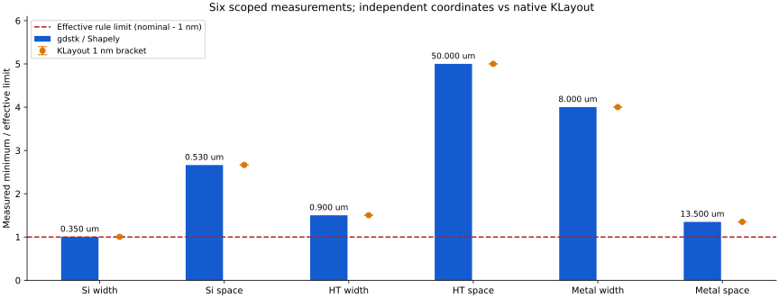
圖 1｜紅虛線是既有 deck 的有效門檻。數值比門檻大，不代表已完成製程或光學效能驗收。 Si 最小線寬位於參考 EC 的 strip 起點；0.350 µm 不是整片波導都只有這個寬度。Si 的 0.530 µm 間距位於 MMI 外相連波導形成的封閉 notch。HT 最小線寬 0.900 µm；HT 間距 50.000 µm，金屬最小線寬 8.000 µm、間距 13.500 µm。此處間距包含同一連通區內的 notch，不能只比較不同多邊形的外距。
4．以實際座標核對量測，不靠示意圖估尺寸 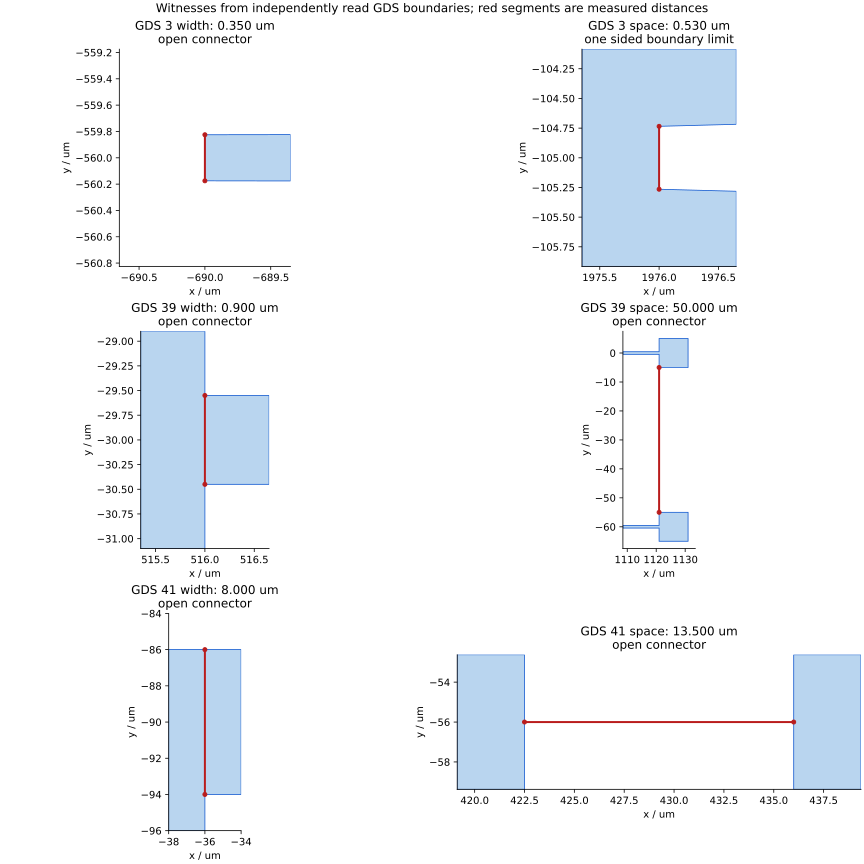
圖 2｜藍色為獨立回讀材料，紅色為實際最短見證。孔洞保留為白色；座標單位 µm，並非用圖片像素量測。 5．保留一次真實方法差異：為什麼曾量到 1.579 µm？ 第一版只接受「見證線完全不碰材料」的間距，得到 Si 最小間距 1.579456 µm；KLayout 卻找到 0.530～0.531 µm。實際 notch 在閉口端形成一條材料邊界，最小見證恰好落在該 cap 上；向空隙方向移動任意小距離後，兩側確實存在 0.530 µm 的間距極限。嚴格的 disjoint 判讀把這個候選漏掉了。
修正方式是：對整條落在邊界的候選，測試極小的雙側位移是否有一側進入真正空隙；保留原始最短距離，不改 GDS、不放寬尺寸。修正後得到 0.530000 µm，並以封閉 notch 單元測試保護。直接用 minimum_clearance、不同 connected component 的 distance，或從 sidecar 線距推斷，都不能替代這個材料邊界問題。
比較兩種 notch 可見性判讀 修正版：包含單側空隙極限 初版：只接受嚴格 disjoint
差異、座標與修正記錄 。這是一個實作差異的修正，沒有宣稱自寫方法已與 KLayout 所有幾何語意等價。
6．八個實際 GDS 控制檔與 54 項判讀 以 gdstk 讀採用版，在隔離副本加入已知尺寸圖形，重新寫 GDS。兩套工具各自回讀這九份檔案（正式版＋八副本），每份比較六項，合計 54 項。七個故意違規控制均判失敗；Si 線寬恰為有效門檻 0.349 µm 的控制則均通過。控制檔不會替代採用版或放入原 M2 ZIP。
GDS 案例 正式採用版 Si_narrow Si_gap HT_narrow HT_gap PAD_narrow PAD_gap Si_margin_equal Si_below_margin 材料圖層 3 · Si／波導 39 · HT／heater 41 · PAD／金屬 量測 線寬 間距
54 項完整比較 CSV · 獨立讀檔／量測 JSON · KLayout JSON · 12 項測試 log 。
測試包含矩形解析尺寸、37° 旋轉、階層／鏡射／倍率、不同 GDS library unit、合併接縫、孔洞、遮擋、封閉 notch、缺圖層與無效多邊形拒絕。它們驗證這套範圍內的量測，不是全製程規則的覆蓋率證明。
7．重跑與原始證據 Set-Location -LiteralPath 'C:\EDA_Codex\Lab06b'
& .\scripts\run_m3_s2.ps1
# 獨立路徑：gdstk -> Shapely/GEOS -> 最短見證與判讀
# 參考路徑：KLayout -> width/space -> 1 nm 最小值搜尋區間
# 另用同一份未改動 deck 重跑完整 pre-DRC；沒有重新建立 GDS。8．17 步教材收尾：完成了哪些工作？
下一步：學員自主提交與講師整體驗收。 課程 17 步的教材與核心示範已建立；實體校準／製程簽核應另立明確驗證工作。
本章由現行 C 版本的 M3 S2 技術內容整合；原始證據與程式可沿內文連結核對。整合報告不會重新執行該步 EDA／數值求解。
2026-10-31 · 本日新實測
實機重現｜Virtuoso、Calibre Interactive／RVE 與 XStream 修正 我用現行 C 版本重新匯入並顯示七顆 MZI 晶片，執行 GUI 檢查、追查 200 點切割接縫與註記差異，再從空白 OA 重播。以下保存本日新截圖、原始結果、另存的跨工具 GDS 與可重播來源。
本日新實測完成： Virtuoso 匯入 43 cells／58 instances／16 TEXT，0 error／0 warning；8191 點最終匯出版通過 Calibre 草稿 16 項、原始 KLayout pre-DRC 31 報告類別。另在空白 OA 目錄重建並重現相同結果。以下截圖與 log 均為 2026-10-31 的現行 C 版本，舊 C01 僅作閱讀格式與自寫規則來源。
我的檔案放在哪裡 唯一正式工作區是 C:\EDA_Codex\Lab06b；D 槽唯讀。總報告在根目錄 Lab06b_index.html；本頁也完整內嵌於總報告的「實機重現」章。
C:\EDA_Codex\Lab06b\
Lab06b_index.html # 完整單頁總報告
course\virtuoso_calibre.html # 本章分頁
work\virtuoso_reproduction\
out\reproduction_results.json # 本日結果與 SHA 綁定
out\screenshots\ # 原生視窗截圖，未改像素
out\gui_auto\ # GUI 自動匯出／8 筆對照
out\gui_fixed\ # GUI 最終 16 項／0 筆、RVE db
out\exports_final\B7_crosscad_final.gds
work\oa_crosscad\lab06b_crosscad_20261031\ # 本機實際 OA
delivery\virtuoso_calibre\ # 可攜檔與重播說明
delivery\Lab06b_Virtuoso_Calibre_reproduction.zip全部結果 JSON · 新版互通檔索引 · 重播說明 · 下載本次封裝
⑥ 實測：WSL EDA_Server 的 Virtuoso 可匯入並顯示 我使用 Virtuoso IC23.1-64b.ISR15.37，將現行 S6 GDS 與另存的跨工具註記修正版，分別匯入兩個新 OA library。工作檔全部位於 C 槽；WSL 透過 /mnt/c/EDA_Codex/Lab06b 讀寫。原始 S6 GDS、M1 相位、規格與 M1／M2 ZIP 均保留。
圖 1｜本日原生 Virtuoso 全晶片截圖。藍色波導、綠色金屬 PAD、橘色 heater；十個光學 I/O 與上下電氣接口均可見。點圖開啟原始尺寸。 圖 2｜同一個 OA cell 的原生 core 放大圖。這是實際 CAD 視窗截圖。 原始版匯入 log · 跨工具版匯入 log · 最終 OA 原生回讀 · 43 筆名稱表
⑦ 實測：Virtuoso → Calibre Interactive／RVE 我載入本機 Calibre 整合，由 Virtuoso 的 Calibre → Run nmDRC 選單建立 layout-server，再以相同 server 連接 Calibre 2026.1 的 classic Interactive。Windows 輸入控制曾回報 GetCursorPos 拒絕存取，因此本次使用原生 Linux 的 Virtuoso SKILL 與 Calibre Tcl 視窗控制項執行；Run DRC／Start RVE 按鈕確實被呼叫並產生新結果。
新式 Qt Runset 與 classic Runset 格式不同。我在 classic GUI 重新設定 Rules／Inputs，並用 Save Runset As 實際儲存兩份 Runset。封裝提供此次 GUI 儲存的版本，保留格式與使用版本。
圖 3｜第一次 Inputs：Export from layout viewer 勾選，明示 OA library／top cell／layout。 圖 4｜第二次 Inputs：取消自動匯出，指定實際 8191 點 GDS，避免再走預設切割。 圖 5｜本日 RVE 載入 gui_fixed/drc.results。16 項均為 0；No Results Found，規則檔路徑指向本次執行目錄。 第一次完整 GUI transcript · 最終 GUI transcript（含 RVE db 路徑） · 最終 summary · 最終 RVE database
⑧ 實測：maxVertices 200 → 8191，8 筆降為 0 筆 GUI 自動匯出在長曲線產生額外切割接縫；與未切割的註記修正版相比，只有 GDS3 出現 25744 nm² 的 XOR 差異。相同原始 pre-DRC deck 找到 8 筆。為確認原因，我也從未改註記的原始版 OA，明確設定 200 與 8191 做 A/B 匯出；再次得到 8 → 0。
# 在 WSL EDA_Server，先切至本次 OA 的 cds.lib 目錄：
cd /mnt/c/EDA_Codex/Lab06b/work/virtuoso_reproduction/work/oa_crosscad
strmout -library lab06b_crosscad_20261031 \
-topCell lab06b_b7_ec_pad_chip -view layout \
-strmFile /mnt/c/EDA_Codex/Lab06b/work/virtuoso_reproduction/out/exports_final/B7_crosscad_final.gds \
-layerMap ../../out/exports/layer.map \
-cellMap ../../out/exports_final/cell.map \
-maxVertices 8191 -dbuPerUU 1000 -labelCase preserve最終 strmout log · 原始版 200／8191 幾何比較 · 最終 GDS XOR／TEXT／接線 · 五份 GDS 同 deck 結果 · 最終完整 pre-DRC report
我額外處理的跨工具字形間距差異 原始 S6 GDS 通過既有 KLayout pre-DRC，但同一份 GDS 在自寫 Calibre 草稿得到 27 筆，全部位於 CS100_SPACE。角度掃描顯示兩個引擎的角度過濾語意不同；我沒有刪除規則或把這些結果隱藏。
我只在 GDS100 把 19 個註記群以原中心放大 1.3 倍，另存跨工具版本；GDS3／4／5／39／41／99 六個實體圖層 XOR 全為 0，GDS1002 的 16 個文字也不變。相同 Calibre 草稿由 27 降至 0，原始 KLayout pre-DRC 仍為 0。原始 S6 採用索引與 M1／M2 ZIP 不替換。
字形角度診斷 · 19 群修改與 XOR · 原版 27 筆 · 負例 16 筆 · 未改動草稿
從空白 OA 重播：我確實再做了一次 我在新的空目錄，只放入原始 S6 GDS、註記演算法、名稱／圖層表與相同規則；重新建立兩個 OA library，重新匯出，再跑 Calibre、原始 KLayout pre-DRC 與幾何接線。沒有沿用既有 OA 或已匯出的 GDS。
# Windows PowerShell：準備新目錄，絕不覆寫上一輪 OA
& 'C:\luceda\luceda_2026033\envs\device_sim\python.exe' C:\EDA_Codex\Lab06b\work\virtuoso_reproduction\replay_prepare.py
# 在已安裝／可授權的 WSL EDA_Server 執行原生工具：
wsl.exe -d EDA_Server -- bash /mnt/c/EDA_Codex/Lab06b/work/virtuoso_reproduction/replay_native.sh
# 原始 deck、幾何、接線與正負例結果核對：
& 'C:\luceda\luceda_2026033\envs\device_sim\python.exe' C:\EDA_Codex\Lab06b\work\virtuoso_reproduction\verify_clean.py乾淨重播結果 · 乾淨重播幾何與接線 · 重播來源 · GUI 重播的前置條件與操作
結果範圍與來源 本次完成新版 PIC 的 OA 匯入、原生畫面、Interactive／RVE、規則正負例、切割差異修正、跨工具註記修正與乾淨重播。16 條 Calibre 規則是既有自寫 width／space 草稿，31 類為原始 CORNERSTONE pre-DRC；都沒有因此升級為 foundry 完整 DRC／LVS 簽核。實際 EC、MMI、heater、封裝與光電功能仍需要校準與量測。
光子曲線的角度條件與一般正交版圖不同，可參考 Siemens 的矽光子 DRC 說明 。本頁所有通過／失敗數字以本機原始輸出為準。
原始 S6 SHA-256：0a8bece1fddd9e10a5cac8369ac57259f5775735b4f5ef6758ab76ceddc23963f6e09bad9fc25cd556772ecbb97cd602a9e3afed5a167a6a4f1d4c1711b247e0
我遇到的問題、原因與修正 我最後保留的設計與重播資料 採用 GDS SHA-256：0a8bece1fddd9e10a5cac8369ac57259f5775735b4f5ef6758ab76ceddc23963df8188958e9629f9a65960a2e308d43641846b9bdadf33eb7f34b4c7a242baa3
如何重播我的工作 Set-Location -LiteralPath 'C:\EDA_Codex\Lab06b'
# 重做某一個步驟：使用對應 scripts/run_m*.ps1
& .\scripts\run_m2_s7.ps1 # 路徑回註、封裝與搬移重播
& .\scripts\run_m3_s1.ps1 # 兩個空目錄從來源／設計輸入重建
& .\scripts\run_m3_s2.ps1 # gdstk／Shapely 獨立量測與 KLayout 比對
# 只重建閱讀報告，不重新執行 EDA：
& 'C:\luceda\luceda_2026033\envs\device_sim\python.exe' .\scripts\render_course.py我目前能證明的範圍 我完成了可追溯的 PIC 設計資料、模型計算、採用 GDS、原始現有 pre-DRC、幾何網表比對、來源重建與選定獨立幾何量測。原相位回註的 53/80 失敗與模型候選的 80/80 都保留在同一份報告中。
實際 EC／MMI／波導／彎曲響應、heater 偏壓與熱串擾、共地壓降、封裝與量測，以及 foundry 完整 DRC／製程專用 LVS／流片資格，仍需要對應的校準與簽核。這些不能由理想模型、pre-DRC 零筆或幾何一致性直接推定。
各步原始執行紀錄 以下時間從各步結果 JSON 讀取；報告整理時間與實際求解／建置時間分開保存。
附錄 A｜我如何讀 Lab01a §7.6 光場圖 我保留既有場圖，回讀原始 NPZ 核對穿透、分光與消光比；以下是圖像、數值與限制的完整分析。
資料性質： 本頁分析 D:\LAB\Lab01a\design_report_v2.html 的 §7.6 與 §7.6.1。圖與電磁場來自既有模擬；本輪重新讀取 NPZ 計算穿透、分光與消光比，沒有重新執行 FDTD。
數值 JSON ·
來源與 hash 。
1．先辨認這是哪一種圖 沿傳播方向 x 與橫向 y 展開的彩色圖，是元件內部場分佈，不是晶片照片或 GDS。這些原圖使用 Meep 2D 有效折射率近似（EIM）與連續波場，外觀可類似 BPM 圖；求解方法仍是 FDTD，不能只憑外觀將它稱為 BPM 計算。
複數穩態場的時間平均關係見 Meep 官方 FAQ 。若需分出前向、後向及特定導模功率，應採 Meep 官方模態分解 ，不能只看場圖顏色。
2．完整 MZI：切換、分光、相干合光 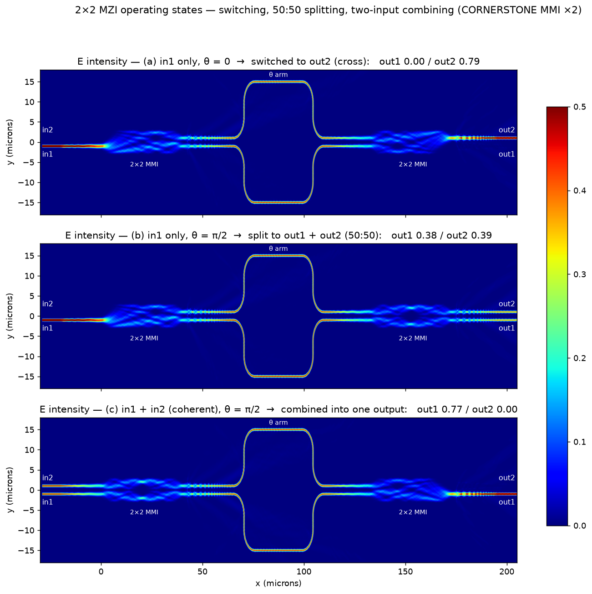
圖 1｜沿用 Lab01a 圖 7-12。每個 MZI 含兩顆 CORNERSTONE 幾何 2×2 MMI；上臂施加等效 θ。原圖使用共同的單路全功率輸入波導峰值作為強度基準；合光案例兩個輸入各為半功率。圖中較窄臂長為示範模型，非完整 Chip 實體尺寸。 從左到右追蹤：輸入 taper → 第一個 MMI 的多模干涉 → 兩條臂 → 上臂相位改變 → 第二個 MMI 再干涉 → 輸出。第一個 MMI 會把單路光分到兩臂，第二個 MMI 依兩臂相位關係把光重新分配；不能將它解釋成光只走某一臂。
公式：T=P₁+P₂；η₁=P₁/T；ER=10 log₁₀(P主/P漏)。這裡的 P 已按原程式的輸入淨 flux 歸一化，因此 T 應讀為該監測配置下的傳輸比 。要作嚴格入射功率、反射與損耗評估，需要參考直波導正規化與模態／反射監測。
不能直接沿用的結論： T≈0.77–0.79 的差額不能全部歸因於「粗網格數值損耗」，也不能當成實際器件插入損耗。尚需網格／時間／PML 收斂、導模分解、監測截面與能量收支，才能區分反射、輻射、未收集模態和數值誤差。
與實際 Chip 的差別： 原程式將相位臂直段縮為 20 µm（報告實際為 184 µm），用核心折射率變化等效相移，並以 GAMMA=1.07 校正。此係數屬該 2D 模型的經驗修正，不是普遍材料常數；不能從此推算 heater 電壓、熱功率或熱頻寬。
3．單顆 MMI：看自成像，也看幾何差異 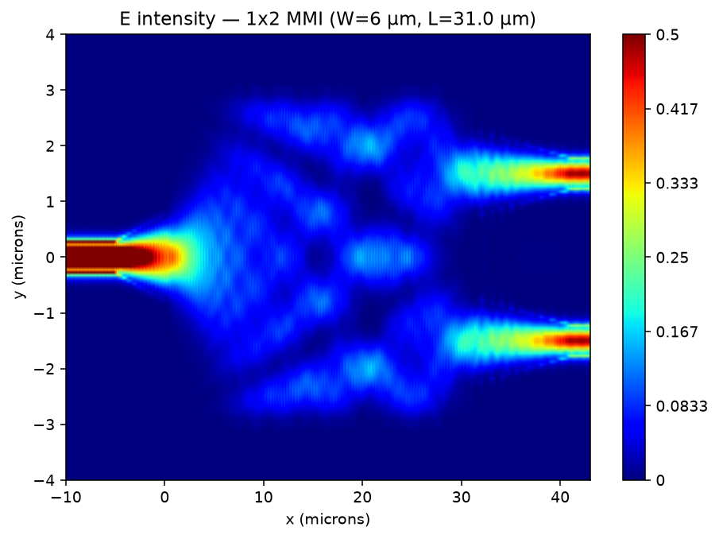
圖 2｜Lab01a 圖 7-15，教學 1×2 MMI：W=6 µm，既有掃描最佳 L=31 µm；不是 B7 使用的 2×2 MMI。 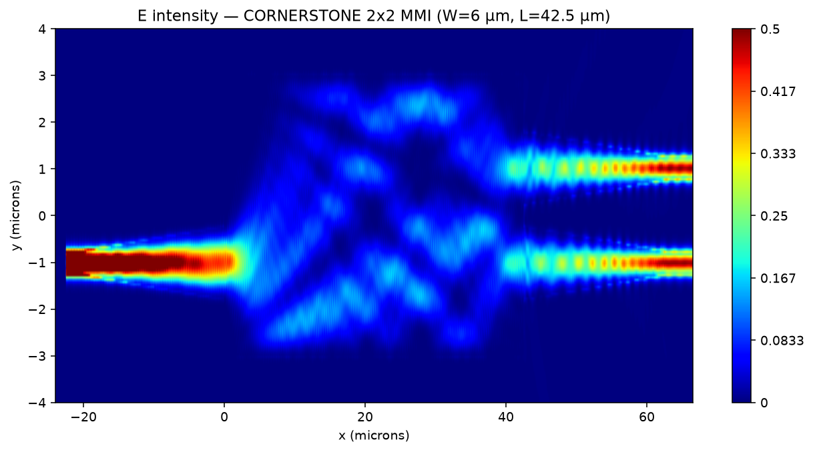
圖 3｜Lab01a 圖 7-16，2×2 MMI：W=6 µm、L=42.5 µm，taper 20 µm（0.45→1.5 µm）、埠 y=±1.015 µm。 窄波導進入寬 MMI 後會激發多個橫向模態；沿 x 方向累積不同相位，再於設計輸出位置重建光場。兩張圖的入射條件、輸出位置與長度不同，花紋本來就不必相同。不要因為 1×2 圖較平滑，就拿它替換 B7 的 2×2 元件模型。
可核對 原始 MMI 執行 log 與 原始程式 。圖使用雙線性插值，顯示平滑程度會受繪圖方式影響；不要把視覺平滑當作模擬收斂的證據。
4．邊緣耦合器：場變大，還要算耦合 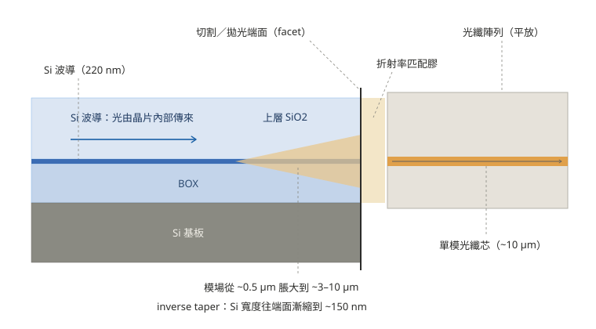
圖 4｜Lab01a 圖 7-13，耦合側視概念示意，未按比例。這是介面說明，不是沿器件的實算場傳播圖。 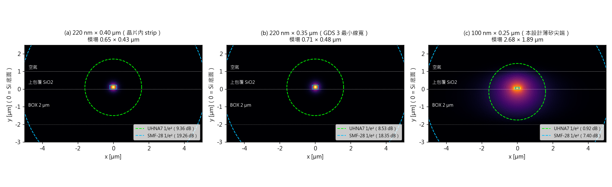
圖 5｜Lab01a 圖 7-14，femwell 截面模態，1550 nm、TE。色階為振幅 |E|；原報告指出薄矽尖端模場約 2.7×1.9 µm。尺寸與重疊結果屬既有模型輸出。 尖端變薄、變窄可讓模態擴展到包覆層，改善與小模場光纖的空間匹配，但也可能增加有限 BOX 下的基板洩漏與對位敏感度。場看起來更大，並不自動代表總耦合損耗更小。
課程要學員分別檢查：① 規範化模式重疊；② taper 沿長度的轉換／反射；③ substrate leakage；④ 水平／垂直位移與偏振；⑤ 端面、膠材與封裝條件。截面重疊只回答其中一部分，不能替代完整光纖到 Chip 的耦合驗證。
5．後續重跑的驗證計畫 原腳本備查：meep_tbu_field.py 、meep_mmi_paper.py 、ec_mode_plot.py 。本包附 MZI 使用的 bend_shapes.json；原始大型 NPZ 已獨立複製到 sources/Lab01a/out，來源 hash 可核對。原腳本需適用的 Meep／femwell 環境，並非 M0 S1 的執行項目。
6．學員分析題 在圖 1 圈出第一個 MMI、相位臂、第二個 MMI，以及各狀態的主輸出。 用 b 的原始數字算 T 與分光比，解釋「每路約一半」的分母是什麼。 比較 c 與 M0 S1 的 combine_pi；說明為何兩個輸入各用 1/√2，而不是各用 1。 兩個相同輸入功率，改相位為何能從 out1 換到 out2？先用光場作答，再談功率。 列出要把本圖結果用於 B7 Chip 預算前，仍須補做的三項驗證。 回到 M0 S1，完成比較與作答
附錄 B｜我的理想 MZI 起步實驗 我先以不需 PDK 的理想模型核對五個案例，並保留可操作的相位預習。
本步問題： 我能否在自己的工作目錄執行同一份程式、得到相同的相位／功率結果，並把環境與輸出留下來？預計 60 分鐘： 讀目標 5 分 → 盤點 15 分 → 實驗 20 分 → 比較原圖 10 分 → 作答 10 分。
1．今天要完成什麼 能指出根目錄、主報告、程式、config 與 evidence 分別在哪裡。 記錄實際 Python 路徑與版本，知道 EDA 工具有哪些尚待驗證。 親手跑五個理想 MZI 案例，分清光場相加與功率相加。 用自己的話解釋「改相位會改輸出」，並提交學習記錄。 不需先裝 IPKISS、Meep 或 NumPy；本步腳本僅使用 Python 標準函式庫。這讓第一個實驗可以先建立可重現的基準，下一步再驗證實際製程工具。
2．先預測，再執行 先看圖，將答案記在下方學習記錄：光只從下方 in1 輸入，θ=0 時，最後會從哪一個輸出離開？若 θ=π/2，會不會每路各得到一半？兩路同時輸入時，總輸入功率應如何固定？
理想 MZI：兩個 MMI、上臂相位與兩個輸出。索引零為下埠。 in2 in1 out2 out1 MMI MMI 相位加在上臂；光由左向右 θ 圖 1｜教學示意，非製程版圖。為了對照 Lab01a 場圖，本步使用下埠 index 0、上埠 index 1；θ 加在上臂。B7 的 in0–in4 命名會在 M1 另行對照。 一顆理想 MMI 的光場混合規則為 H=[[1,i],[i,1]]/√2；此處 MZI=H·diag(1,eiθ )·H。先將兩路複數光場 相加，輸出功率才是 |E|²。兩個相同功率、不同相位的輸入，可能完全走向不同輸出。
3．確認目錄與 Python 先直接開啟 C:\EDA_Codex\Lab06b\Lab06b_index.html，確認能從導覽來到本頁。再開 PowerShell，使用以下命令。Python 路徑請從已安裝環境確認；若尚未安裝，可由講師提供 Python 3.10+ 或後續 Luceda 相容環境。
Set-Location -LiteralPath 'C:\EDA_Codex\Lab06b'
# 讀取現有工具路徑；其他電腦上課時，先填入該機設定。
$ToolPaths = Get-Content -LiteralPath 'C:\EDA_Codex\Lab06b\EDA_paths.json' -Raw | ConvertFrom-Json
$PythonExe = $ToolPaths.windows.python_executable
& $PythonExe --version
& $PythonExe .\scripts\env_audit.py
& $PythonExe .\scripts\smoke_mzi.py若系統阻擋 PowerShell 腳本，可直接執行以下兩個 Python 命令，不必調整全機 ExecutionPolicy：
& $PythonExe .\scripts\env_audit.py
& $PythonExe .\scripts\smoke_mzi.py閱讀環境盤點程式 · 閱讀 MZI 實驗程式 · 閱讀 PowerShell 入口
4．檢查五個實際輸出 M0 S1 baseline: PASS
...
cross ['0.000000', '1.000000'] PASS
split ['0.500000', '0.500000'] PASS
bar ['1.000000', '0.000000'] PASS
combine_pi ['1.000000', '0.000000'] PASS
combine_0 ['0.000000', '1.000000'] PASS
5/5 PASS預期輸出是程式的檢查基準；你自己的執行結果要在 evidence/m0_s1/ 裡確認。浮點數可能接近 0 而非恰好 0，程式以 10⁻¹² 誤差容限核對功率分配與總功率守恆。
5．先在瀏覽器轉動相位 這是同一個理想模型的快速預習；請仍執行上方 Python，才能留下你所用環境的證據。
θ：0.00 π 輸入狀態 單路 in1，總功率 1 兩路等功率，相對相位 π 兩路等功率，相對相位 0
P(out1)+P(out2)=1；本圖沒有損耗、反射或雜訊。相位與埠定義同圖 1。
6．和 Lab01a 的原圖比較 打開 §7.6 MZI 三態分析 ：原圖切換態的總穿透約 0.7886，分光態約 0.7727，並非理想模型的 1。先指出它們的輸出去向是否一致 ，再解釋為何不能直接把差額當作真實 Chip 損耗。
基礎實驗通過只證明理想模型與目前 Python 可執行。它沒有驗證 PDK、授權、元件尺寸、heater 電壓、GDS、DRC 或實際 Chip 功能。
回到 M0 S1 主頁 ，接續 PDK MZI 版圖與 DRC 故障注入。下一步 M0 S2 進入元件物理與光場。
常見問題與修正 python 指向 Windows Store： 改用確實存在的 python.exe 完整路徑；盤點 JSON 會記錄 sys.executable。ModuleNotFoundError： 本步兩個腳本不需第三方套件。若是後續 EDA，確認目前 Python 是否是授課環境。找不到檔案： 確認根目錄是 C:\EDA_Codex\Lab06b，腳本會以自身位置計算相對路徑。5/5 失敗： 先核對上下埠順序、θ 加在哪一臂、MMI 的 i 與 1/√2，以及是否先求光場再取模平方。EDA readiness 未驗證： 在未提供 EDA 工具鏈的環境為預期狀態；它不影響理想模型基礎實驗的執行。